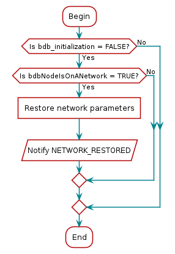
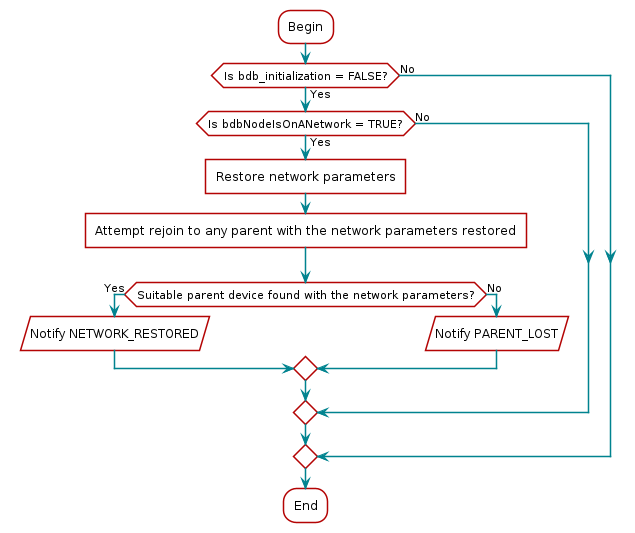
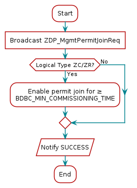
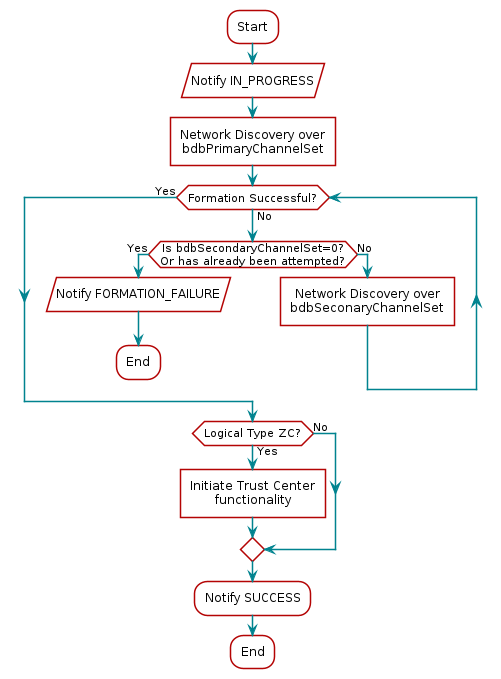
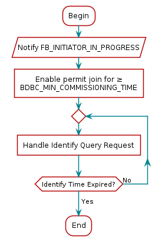
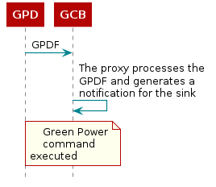

Z-Stack Overview¶
Introduction¶
Purpose¶
This document explains some of the components of the Texas Instruments Zigbee stack and their functioning. It explains the configurable parameters in the Zigbee stack and how they may be changed by the application developer to suit the application requirements.
Scope¶
This document describes concepts and settings for the Texas Instruments Z-Stack™ Release. This is a Zigbee PRO 2017 (R22) certified stack for the Zigbee and Zigbee PRO stack profiles. It also exlains the added features of the Zigbee 3.0 specification and how they can be used for compatibility with Zigbee 3.0 or legacy devices.
Definitions, Abbreviations and Acronyms¶
Term |
Definition |
|---|---|
AF |
Application Framework |
AES |
Advanced Encryption Standard |
AIB |
APS Information Base |
API |
Application Programming Interface |
APS |
Application Support Sub-Layer |
APSDE |
APS Date Entity |
APSME |
APS Management Entity |
ASDU |
APS Service Datagram Unit |
BDB |
Base Device Behavior |
BSP |
Board Support Package – taken together, HAL & OSAL comprise a rudimentary operating system commonly referred to as a BSP |
CCM* |
Enhanced counter with CBC-MAC mode of operation |
EPID |
Extended PAN ID |
GP |
Green Power |
GPD |
Green Power Device |
HAL |
Hardware (H/W) Abstraction Layer |
MSG |
Message |
MT |
Z-Stack’s Monitor and Test Layer |
NHLE |
Next Higher Layer Entity |
NIB |
Network Information Base |
NWK |
Network |
OSAL |
Z-Stack’s Operating System Abstraction Layer |
OTA |
Over-the-Air |
PAN |
Personal Area Network |
RSSI |
Received Signal Strength Indication |
TC |
Trust Center |
TCLK |
Trust Center Link Key |
ZCL |
Zigbee Cluster Library |
ZDO |
Zigbee Device Object |
ZHA |
Zigbee Home Automation |
ZC |
Zigbee Coordinator |
ZR |
Zigbee Router |
ZED |
Zigbee End Device |
Reference Documents¶
Zigbee document 05-3474-22 Zigbee PRO 2017 (R22) Specification
Zigbee document 07-5123-07 Zigbee Cluster Library 7 Specification
Zigbee document 13-0402-13 Zigbee Base Device Behavior
Zigbee document 14-0563-16 Zigbee Green Power specification
Zigbee¶
A Zigbee network is a multi-hop network of mains-powered or battery-powered devices. This means that successful communication between two devices may require intermediate devices to relay messages. Due to the cooperative nature of the network, each device is required to perform specific networking functions and configure certain parameters to specific values. The role of a device is determined by the set of networking functions it performs and is called the logical device type. The set of parameters that need to be configured to specific values, along with those values, is called the stack profile.
Logical Device Types¶
The three logical device types in a Zigbee network are Coordinator, Router, and End Device. A Zigbee network consists of a device with network formation capabilities (such as Coordinator or Router) and multiple Router and End Device nodes. Note that the device type does not in any way restrict the type of application that may run on the particular device.
Figure 47. Example of typical Zigbee network¶
Example of typical Zigbee network shows a typical Zigbee network with the Zigbee Coordinator (black), the Routers (red), and the End Devices (white).
An application can be defined as any of these three logical devices depending on the configuration flags enabled in the project.
Logical Device |
Compilation flags needed |
|---|---|
Coordinator |
|
Router |
|
End Device |
None |
Coordinator¶
A coordinator is a device with network formation capabilities, but without network joining capabilities. This means the device can only create its own network, but not join existing networks. To create a network, the coordinator node scans the RF environment for existing networks, chooses a channel and a network identifier (also called PAN ID) and then starts the network. In Zigbee 3.0 this device creates a Centralized security network and is mandated to behave as the Trust Center of this network, which means that this device is responsible for managing security of the network and is the only device capable of distributing keys and allowing devices to join the network it has created.
The coordinator node can also be used, optionally, to assist in setting up application-level bindings in the network.
The role of the coordinator is mainly related to starting the network and managing the keys. Besides that, it behaves like a router device. Note that the Coordinator must handle the network procedures related to devices joining or leaving the network, so it cannot be absent of its own network. Further details on security schema are available in Security.
Router¶
A router performs functions for allowing other devices to join the network, for multi-hop routing, and for assisting its child end devices with communication. In Zigbee 3.0 this device has been granted with formation capabilities that allow it to create a Distributed security network. This formation capability allows the router device to create a network that does not have a security manager. This means that once the network has been created, the router which created it does not have any special role in this network. More details are available in Security.
In general, Routers are expected to be active all the time and thus have to be mains-powered.
End Device¶
An end device has no specific responsibility for maintaining the network infrastructure, so it can sleep and wake up as it chooses. This device can be a battery-powered node. Generally, the memory requirements (especially RAM requirements) are lower for an end device.
Note
In Z-Stack all sample application projects are provided with the needed pre-include files to build each device type according to the project.
Stack Profile¶
The set of stack parameters that need to be configured to specific values, along with the above device type values, is called a stack profile. The parameters that comprise the stack profile are defined by the Zigbee Alliance.
All devices in a network must conform to the same stack profile (i.e., all devices must have the stack profile parameters configured to the same values).
If application developers choose to change the settings for any of these parameters, they can do so with the caveat that those devices will no longer be able to interoperate with devices from other vendors that choose to follow the Zigbee specified stack profile. Thus, developers of “closed networks” may choose to change the settings of the stack profile variables. These stack profiles are called “network-specific” stack profiles.
The stack profile identifier that a device conforms to is present in the
beacon transmitted by that device. This enables a device to determine
the stack profile of a network before joining to it. The
“network-specific” stack profile has an ID of 0, the legacy Zigbee
stack profile has ID of 1, and the Zigbee PRO stack profile (which is used
for Zigbee 3.0) has ID of 2. The stack profile is configured by the
STACK_PROFILE_ID parameter in the nwk_globals.h file.
The stack profile ID of 3 is reserved for Green Power devices, and it
appears in the respective frames.
Addressing¶
Address Types¶
Zigbee devices have two types of addresses. A 64-bit IEEE address (also called MAC address or Extended address) and a 16-bit network address (also called logical address or short address).
The 64-bit address is a globally unique address and is assigned to the device for its lifetime. It is usually set by the manufacturer or during installation. These addresses are maintained and allocated by the IEEE. More information on how to acquire a block of these addresses is available at IEEE Registration Authority.
The 16-bit address is assigned to a device when it joins a network. Within that network, it is unique and used for identifying devices and sending data.
Network Address Assignment¶
Stochastic Addressing¶
Zigbee PRO uses a stochastic (random) addressing scheme for assigning the network addresses. This addressing scheme randomly assigns short addresses to new devices, and then uses the rest of the devices in the network to ensure there are no duplicate addresses. When a device joins, it receives its randomly generated address from its parent. The new network node then generates a “Device Announce” frame (which contains its new short address and its extended address) to the rest of the network. If there is another device with the same short address, a router node in the network will send out a broadcast “Network Status – Address Conflict” to the entire network and all devices with the conflicting short address will change its short address. When the conflicted devices change their address, they issue their own “Device Announce” to check their new address for conflicts within the network.
End devices do not participate in the “Address Conflict”. Their parents do that for them. If an “Address Conflict” occurs for an end device, its parent will issue the end device a “Rejoin Response” message to change the end device’s short address and the end device issues a “Device Announce” to check their new address for conflicts within the network.
When a “Device Announce” is received, the association and binding tables are updated with the new short address, but routing table information is not updated (new routes must be established). If a parent determines that the “Device Announce” pertains to one of its end device children, but it didn’t come directly from the child, the parent will assume that the child moved to another parent.
Addressing in Z-Stack¶
In order to send data to a device on the Zigbee network, the application
generally uses the Zstackapi_AfDataReq() function. The destination device to
which the packet is to be sent is of type zstack_AFAddr_t (defined in
zstack.h)
typedef struct _zstack_afaddr_t
{
/** Address Mode */
zstack_AFAddrMode addrMode;
/** Address union of 16 bit short address and 64 bit IEEE address */
union
{
/** 16 bit network address */
uint16_t shortAddr;
/** 64 bit IEEE address */
zstack_LongAddr_t extAddr;
} addr;
/** Endpoint address element, optional if addressing to the endpoint,
* can be 0xFF to address all endpoints in a device.
*/
uint8_t endpoint;
/** PAN ID - for use with Inter-PAN */
uint16_t panID;
} zstack_AFAddr_t;
Note that in addition to the network address, the address mode parameter
also needs to be specified. The destination address mode can take one of
the following values (AF address modes are also defined in zstack.h)
/** Address types */
typedef enum
{
//! Address not present
zstack_AFAddrMode_NONE = 0,
//! Group Address (uint16_t)
zstack_AFAddrMode_GROUP = 1,
//! Short Address (uint16_t)
zstack_AFAddrMode_SHORT = 2,
//! Extended Address (8 bytes/64 bits)
zstack_AFAddrMode_EXT = 3,
//! Broadcast Address (uint16_t)
zstack_AFAddrMode_BROADCAST = 15,
} zstack_AFAddrMode;
The address mode parameter is necessary because, in Zigbee, packets can be unicast, multicast, or broadcast. A unicast packet is sent to a single device, a multicast packet is destined to a group of devices and a broadcast packet is generally sent to all devices in the network. An indirect packet is used when the application does not explicitly know the destination of the packet. This is explained in more detail below.
Unicast¶
This is the normal addressing mode and is used to send a packet to a
single device whose network address is known. The addrMode is set to
zstack_AFAddrMode_SHORT and the destination network address is carried in the packet.
Indirect¶
This is when the application is not aware of the final destination of
the packet. The mode is set to zstack_AFAddrMode_NONE and the destination
address is not specified. Instead, the destination is looked up from a
binding table that resides in the stack of the sending device. This
feature is called Source binding (see Binding).
When the packet is sent down to the stack, the destination address and end point is looked up from the binding table and used. The packet is then treated as a regular unicast packet. If more than one destination device is found in the binding table, a copy of the packet is sent to each of them. If no binding entry is found, the packet will not be sent.
Broadcast¶
This address mode is used when the application wants to send a packet to
all devices in the network. The address mode is set to zstack_AFAddrMode_BROADCAST and
the destination address can be set to one of the following broadcast
addresses:
NWK_BROADCAST_SHORTADDR_DEVALL (0xFFFF) – the message will be sent to
all devices in the network (includes sleeping devices). For sleeping
devices, the message is held at its parent until the sleeping device
polls for it or the message is timed out (NWK_INDIRECT_MSG_TIMEOUT in
ti_zstack_config.h, as generated from the project’s .syscfg file
RF STACKS → Z-Stack → Advanced → Routing).
NWK_BROADCAST_SHORTADDR_DEVRXON (0xFFFD) – the message will be sent
to all devices that have the receiver on when idle (RXONWHENIDLE), that
is, all non-sleepy devices.
NWK_BROADCAST_SHORTADDR_DEVZCZR (0xFFFC) – the message is sent to all
routers (including the coordinator).
Group Addressing¶
This address mode is used when the application wants to send a packet to
a group of devices. The address mode is set to zstack_AFAddrMode_GROUP and the parameter
addr.shortAddr must be set set with the group identifier.
Before using this feature, groups must be defined in the network (see
Zstackapi_ApsAddGroupReq() in the Z-Stack API).
Note that groups can also be used in conjunction with indirect addressing. The destination address found in the binding table can be either a unicast or a group address. Also note that broadcast addressing is simply a special case of group addressing where the groups are set up ahead of time and defined by Zigbee Alliance.
Sample code for a device to add itself to a group with identifier 0x0001:
#define GROUP_NAME "Group1"
zstack_apsAddGroup_t group;
group.endpoint = SAMPLEAPP_ENDPOINT;
/* Assign yourself to group 1 */
group.groupID = 0x0001;
/* First byte is string length */
group.n_name = strlen( (const char *)GROUP_NAME );
group.pName = GROUP_NAME;
Zstackapi_ApsAddGroupReq(appServiceTaskId, &group);
Important Device Addresses¶
An application may want to know the address of a device (self or remote device). Use the following functions to get the addresses.
Zstackapi_ZdoNwkAddrReq()– Use IEEE address to retrieve the short address.Zstackapi_ZdoIeeeAddrReq()– Use Short address to retrieve the IEEE address.
Note
The responses to this messages are provided by the stack with the command IDs zstackmsg_CmdIDs_ZDO_NWK_ADDR_RSP and zstackmsg_CmdIDs_ZDO_IEEE_ADDR_RSP
Binding¶
Binding is a mechanism to control the flow of messages from one application to another application (or multiple applications). The binding mechanism is implemented in all devices and is called source binding.
Binding allows an application to send a packet without knowing the destination address, the APS layer determines the destination address from its binding table, and then forwards the message to the destination application (or multiple applications) or group.
Building a Binding Table¶
There are 3 ways to build a binding table:
Zigbee Device Object Bind Request – a commissioning tool can tell the device to make a binding record.
Zigbee Device Object End Device Bind Request – 2 devices can tell the coordinator that they would like to setup a binding table record. The coordinator will make the match up and create the binding table entries in the 2 devices.
Finding and Binding commissioning process for initiator devices.
Zigbee Device Object Bind Request¶
Any device or application can send a ZDO message to another device (over the air) to build a binding record for that other device in the network. This is called Assisted Binding and it will create a binding entry for the sending device.
The Commissioning Application¶
An application can create a bind between two remote devices by calling Zstackapi_ZdoBindReq()
defined in zstackapi.h for which are needed the addresses, endpoints, and the
cluster ID wanted in the binding record. The first parameter (target dstAddr)
is the short address of the binding’s source address (where the binding record will be stored) .
The remaining parameters are of the remote application device
that the bind will use to send frames.
Calling Zstackapi_ZdoUnbindReq() can be used,
with the same parameters, to remove the binding record.
The target device will send back a Zigbee Device Object Bind or Unbind
Response message. The ZDO code on the coordinator will parse this and
notify the application with the message zstackmsg_CmdIDs_ZDO_BIND_RSP or
zstackmsg_CmdIDs_ZDO_UNBIND_RSP.
For the Bind Response, the status returned from the coordinator will be
ZDP_SUCCESS, ZDP_TABLE_FULL, ZDP_INVALID_EP, or
ZDP_NOT_SUPPORTED.
For the Unbind Response, the status returned from the coordinator will
be ZDP_SUCCESS, ZDP_NO_ENTRY, ZDP_INVALID_EP, or
ZDP_NOT_SUPPORTED.
Zigbee Device Object End Device Bind Request¶
This mechanism uses a button press or other similar action at the
selected devices to bind within a specific timeout period. The End
Device Bind Request messages are collected at the coordinator within the
timeout period and a resulting Binding Table entry is created based on
the agreement of profile ID and cluster ID. The default end device
binding timeout is 16 seconds
(see APS_DEFAULT_MAXBINDING_TIME in zglobals.h),
but can be changed if added as a compile flag.
Coordinator end device binding is a toggle process. The first time you go through the process, it will create a binding entry in the requesting devices. Then, when you go through the process again, it will remove the bindings in the requesting devices.
When the coordinator receives 2 matching End Device Bind Requests, it will start the process of creating source binding entries in the requesting devices. The coordinator performs the following process, assuming matches were found in the ZDO End Device Bind Requests:
Send a ZDO Unbind Request to the first device. The End Device Bind is a toggle process, so the unbind is sent first to remove an existing bind entry.
Wait for the ZDO Unbind Response. If the response status is
ZDP_NO_ENTRY, send a ZDO Bind Request to make the binding entry in the source device. If the response status isZDP_SUCCESS, move on to the cluster ID for the first device (the unbind removed the entry – toggle).Wait for the ZDO Bind Response. When received, move on to the next cluster ID for the first device.
When the first device is done, do the same process with the second device.
When the second device is done, send the ZDO End Device Bind Response messages to both the first and second device.
End Device Binding process is already built in the coordinator stack and does not require application interaction.
Finding and Binding¶
Base Device Behavior has defined a commissioning method called Finding and Binding, which is a process that relies on the usage of the Identify cluster and ZDO messages to allow the commissioned device to find devices with matching application clusters. This mechanism is usually triggered by the user to specify which devices need to “Find and Bind” each other so that these pairs of devices can communicate more effectively. Refer to section Finding and Binding for further details on this commissioning method.
Configuring Source Binding¶
In the project’s .syscfg file, look at the binding
configuration item Binding Table Size
(in RF STACKS → Z-Stack → Advanced → Max Table Sizes).
Binding Table Size is the maximum number of entries in the binding table.
After building the project, this value corresponds to NWK_MAX_BINDING_ENTRIES in ti_zstack_config.h (see Zigbee Configuration).
The binding table is maintained in static RAM (not allocated), so the number of entries directly impacts the amount of RAM used. The size of each binding table entry is 14 bytes and allows up to 4 cluster IDs. The binding table also affects the number of entries in the address manager.
Routing¶
Overview¶
A mesh network is described as a network in which the routing of messages is performed as a decentralized, cooperative process involving many peer devices routing on each others’ behalf.
The routing is completely hidden from the application layer. The application simply sends data destined to any device down to the stack which is then responsible for finding a route. In other words, the application is unaware of the fact that it is operating in a multi-hop network.
Routing also enables the “self healing” nature of Zigbee networks. If a particular wireless link is down, the routing functions will eventually find a new route that avoids that particular broken link. This greatly enhances the reliability of the wireless network and is one of the key features of Zigbee.
Many-to-One routing is a special routing scheme that handles the scenario where centralized traffic is involved. It is part of the Zigbee PRO feature set to help minimize traffic particularly when all the devices in the network are sending packets to a gateway or data concentrator. Many-to-One route discovery is described in detail in section Many-to-One Routing Protocol.
Routing Protocol¶
Zigbee uses a routing protocol that is based on the AODV (Ad-hoc On-demand Distance Vector) routing protocol for ad-hoc networks. Simplified for use in sensor networks, the Zigbee routing protocol facilitates an environment capable of supporting mobile nodes, link failures and packet losses.
Neighbor routers are routers that are within radio range of each other. Each router keeps track of their neighbors in a “neighbor table”, and the “neighbor table” is updated when the router receives any message from a neighbor router (unicast, broadcast, or beacon).
When a router receives a unicast packet, from its application or from
another device, the NWK layer forwards it according to the following
procedure. If the destination is one of the neighbors of the router
(including its child devices) the packet will be transmitted directly to
the destination device. Otherwise, the router will check its routing
table for an entry corresponding to the routing destination of the
packet. If there is an active routing table entry for the destination
address, the packet will be relayed to the next hop address stored in
the routing entry. If a single transmission attempt fails, the NWK layer
will repeat the process of transmitting the packet and waiting for the
acknowledgement, up to a maximum of NWK_MAX_DATA_RETRIES times.
The maximum data retries in the NWK layer is configured in the project’s .syscfg file:
RF STACKS → Z-Stack → Advanced → Packet Sending → Max Data Retries (see Zigbee Configuration).
If an active entry cannot be found in the routing table
or using an entry failed after the maximum number of retries, a route
discovery is initiated and the packet is buffered until that process is
completed.
Zigbee End Devices do not perform any routing functions. An end device wishing to send a packet to any device simply forwards it to its parent device which will perform the routing on its behalf. Similarly, when any device wishes to send a packet to an end device and initiate route discovery, the parent of the end device responds on its behalf.
Also in Z-Stack, the routing implementation has optimized the routing table storage. In general, a routing table entry is needed for each destination device. But by combining all the entries for end devices of a particular parent with the entry for that parent device, storage is optimized without loss of any functionality.
Zigbee routers, including the coordinator, perform the following routing functions: - Route discovery and selection - Route maintenance - Route expiry These are explained in more detail below.
Route Discovery and Selection¶
Route discovery is the procedure whereby network devices cooperate to find and establish routes through the network. A route discovery can be initiated by any router device and is always performed in regard to a particular destination device. The route discovery mechanism searches all possible routes between the source and destination devices and tries to select the best possible route.
Route selection is performed by choosing the route with the least possible cost. Each node constantly keeps track of “link costs” to all of its neighbors. The link cost is typically a function of the strength of the received signal. By adding up the link costs for all the links along a route, a “route cost” is derived for the whole route. The routing algorithm tries to choose the route with the least “route cost”.
Routes are discovered by using request/response packets. A source device requests a route for a destination address by broadcasting a Route Request (RREQ) packet to its neighbors. When a node receives an RREQ packet it in turn rebroadcasts the RREQ packet. But before doing that, it updates the cost field in the RREQ packet by adding the link cost for the latest link and makes an entry in its Route Discovery Table.
This way, the RREQ packet carries the sum of the link costs along all the links that it traverses. This process repeats until the RREQ reaches the destination device. Many copies of the RREQ will reach the destination device traveling via different possible routes. Each of these RREQ packets will contain the total route cost along the route that it traveled. The destination device selects the best RREQ packet and sends back a Route Reply (RREP) back to the source.
The RREP is unicast along the reverse routes of the intermediate nodes until it reaches the original requesting node. As the RREP packet travels back to the source, the intermediate nodes update their routing tables to indicate the route to the destination. The Route Discovery Table, at each intermediate node, is used to determine the next hop of the RREP traveling back to the source of the RREQ and to make the entry in to the Routing Table.
Once a route is created, data packets can be sent. When a node loses connectivity to its next hop (it doesn’t receive a MAC ACK when sending data packets), the node invalidates its route by sending an RERR to all nodes that potentially received its RREP and marks the link as bad in its Neighbor Table. Upon receiving a RREQ, RREP, or RERR, the nodes update their routing tables.
Route Maintenance¶
Mesh networks provide route maintenance and self healing. Intermediate nodes keep track of transmission failures along a link. If a link (between neighbors) is determined as bad, the upstream node will initiate route repair for all routes that use that link. This is done by initiating a rediscovery of the route the next time a data packet arrives for that route. If the route rediscovery cannot be initiated, or it fails for some reason, a route error (RERR) packet is sent back to source of the data packet, which is then responsible for initiating the new route discovery. Either way the route gets re-established automatically.
Route Expiry¶
The routing table maintains entries for established routes. If no data packets are sent along a route for a period of time, the route will be marked as expired. Expired routes are not deleted until space is needed. Thus routes are not deleted until it is absolutely necessary. The automatic route expiry time can be configured in SysConfig: RF STACKS → Z-Stack → Advanced → Routing (see Zigbee Configuration). Units are in seconds. To disable this feature, set this value to 0.
Table Storage¶
The routing functions require the routers to maintain some tables.
Routing Table¶
Each Zigbee router, including the Zigbee coordinator, contains a routing table in which the device stores information required to participate in the routing of packets. Each routing table entry contains the destination address, the next hop node, and the link status. All packets sent to the destination address are routed through the next hop node. Also entries in the routing table can expire in order to reclaim table space from entries that are no longer in use.
Routing table capacity indicates that a device routing table has a free
routing table entry or it already has a routing table entry
corresponding to the destination address. The routing table size is
configured in the project’s .syscfg file (see Zigbee Configuration).
This corresponds to MAX_RTG_ENTRIES in the generated ti_zstack_config.h file.
See the section on Route Maintenance for
route expiration details.
Route Discovery Table¶
Router devices involved in route discovery, maintain a route discovery table. This table is used to store temporary information while a route discovery is in progress. These entries only last for the duration of the route discovery operation. Once an entry expires it can be used for another route discovery operation. Thus this value determines the maximum number of route discoveries that can be simultaneously performed in the network. This value is configured in the project’s .syscfg file: RF STACKS → Z-Stack → Advanced → Routing → Max Route Request Entries. (See Zigbee Configuration).
Many-to-One Routing Protocol¶
The following explains Many-to-One and source routing procedure for users’ better understanding of Zigbee routing protocol. In reality, all routings are taken care in the network layer and transparent to the application. Issuing Many-to-One route discovery and route maintenance are application decisions.
Many-to-One Routing Overview¶
Many-to-One routing is adopted in Zigbee PRO to help minimize traffic particularly when centralized nodes are involved. It is common for low power wireless networks to have a device acting as a gateway or data concentrator. All nodes in the networks shall maintain at least one valid route to the central node. To achieve this, all nodes have to initiate route discovery for the concentrator, relying on the existing Zigbee AODV based routing solution. The route request broadcasts will add up and produce huge network traffic overhead. To better optimize the routing solution, Many-to-One routing is adopted to allow a data concentrator to establish routes from all nodes in the network with one single route discovery and minimize the route discovery broadcast storm.
Source routing is part of the Many-to-One routing that provides an efficient way for concentrator to send response or acknowledgement back to the destination. The concentrator places the complete route information from the concentrator to the destination into the data frame which needs to be transmitted. It minimizes the routing table size and route discovery traffic in the network.
Many-to-One Route Discovery¶
The following figure shows an example of the Many-to-One route discovery procedure. To initiate Many-to-One route discovery, the concentrator broadcast a Many-to-One route request to the entire network. Upon receipt of the route request, every device adds a route table entry for the concentrator and stores the one hop neighbor that relays the request as the next hop address. No route reply will be generated.
Figure 48. Many-to-One route discovery illustration¶
Many-to-One route request command is similar to unicast route request command with same command ID and payload frame format. The option field in route request is Many-to-One and the destination address is 0xFFFC. The following Z-Stack API can be used for the concentrator to send out Many-to-One route request. Please refer to the Z-Stack API documentation for detailed usage about this API.
zstack_ZStatusValues Zstackapi_DevNwkRouteReq(
appServiceTaskId, zstack_devNwkRouteReq_t *pReq)
The option field is a bitmask to specify options for the route request. It can have the following values:
Value |
Description |
|---|---|
0x00 |
Unicast route discovery |
0x01 |
Many-to-One route discovery with route cache (the concentrator does not have memory constraints). |
0x03 |
Many-to-One route discovery with no route cache (the concentrator has memory constraints) |
When the option field has value 0x01 or 0x03, the DstAddress field will be overwritten with the Many-to-One destination address 0xFFFC. Therefore, in a Many-to-One request, it is irrelevant what value the application sets the DstAddress to.
Route Record Command¶
The above Many-to-One route discovery procedure establishes routes from all devices to the concentrator. The reverse routing (from concentrator to other devices) is done by route record command (source routing scheme). The procedure is provided in the Route record command (source routing) illustration. R1 sends data packet DATA to the concentrator using the previously established Many-to-One route and expects an acknowledgement back. To provide a route for the concentrator to send the ACK back, R1 sends route record command along with the data packet which records the routing path the data packet goes through and offers the concentrator a reverse path to send the ACK back.
Figure 49. Route record command (source routing) illustration¶
Upon receipt of the route record command, devices on the relay path will append their own network addresses to the relay list in the route record command payload. By the time the route record command reaches the concentrator, it includes the complete routing path through which the data packet is relayed to the concentrator. Whenever the concentrator sends an APS ACK to R1 in response to a data frame (not due to a route record command itself), it shall include the source route (relay list) in the network layer header of the packet. All devices receiving the packet shall relay the packet to the next hop device according to the source route.
A concentrator with no memory constraints can store all route record entries it receives and use them to send packets to the source devices in the future. Therefore, devices only need to send a route record command once. However, for a concentrator without source route caching capability, devices always need to send route record commands along with data packets. The concentrator will store the source route temporarily in the memory and then discard it after usage.
In brief, Many-to-One routing is an efficient enhancement to the regular Zigbee unicast routing when most devices in the network are funneling traffic to a single device. As part of the Many-to-One routing, source routing is only utilized under certain circumstances. First, it is used when the concentrator is responding to a request initiated by the source device. Second, the concentrator should store the source route information for all devices if it has sufficient memory. If not, whenever devices issue requests to the concentrator, they should also send a route record along with it.
Many-to-One Route Maintenance¶
If a link failure is encountered while a device is forwarding a Many-to-One routed frame (notice that a Many-to-One routed frame itself has no difference from a regular unicast data packet, however, the routing table entry has a field to specify that the destination is a concentrator), the device will generate a network status command with code “Many-to-One route failure”. The network status command will be relayed to the concentrator through a random neighbor and hopefully that neighbor still has a valid route to the concentrator. When the concentrator receives the route failure, the application will decide whether or not to re-issue a Many-to-One route request.
When the concentrator receives network status command indicating
Many-to-One route failure, it passes the indication to the ZDO layer and
the ZDO_ManytoOneFailureIndicationCB function in zd_app.c
is called.
By default, this function will redo a Many-to-One route discovery to recover the routes. You can modify this function if you want a more complicated process other than the default.
Routing Settings Quick Reference¶
Note
Please see Zigbee Configuration for macros generated from SysConfig.
Setting Routing Table Size |
Set Note: the value must be greater than 4. |
Setting Route Expiry Time |
Set |
Setting Route Discovery Table Size |
Set |
Enable Concentrator |
Set |
Setting Concentrator Property – With Route Cache |
Set |
Setting Source Routing Table Size |
Set |
Setting Default Concentrator Broadcast Radius |
Set |
Router Off-Network Association Cleanup¶
In case a Zigbee Router gets off network for a long period of time, its children will try to join an alternative parent. When the router is back online, the children will still appear in its child table, preventing proper routing of egress traffic to them.
In order to avoid this, it is recommended that routers prone to get off
and on the network will have zgRouterOffAssocCleanup flag set to TRUE
(mapped to NV item: ZCD_NV_ROUTER_OFF_ASSOC_CLEANUP):
uint8_t zgRouterOffAssocCleanup = TRUE;
zgSetItem( ZCD_NV_ROUTER_OFF_ASSOC_CLEANUP, sizeof(cleanupChildTable), &cleanupChildTable );
When enabled, deprecated end device entries will be removed from the child table if traffic received from them was routed by another parent.
Note
This will also be handled by Parent Annce functionality
ZDO Message Requests¶
The ZDO module provides functions to send ZDO service discovery request messages and receive ZDO service discovery response messages. The following flow diagram illustrates the function calls need to issue an IEEE Address Request and receive the IEEE Address Response for an application, as it is managed by the stack.
![@startuml
participant "Other Devices"
participant "ZDO Layer"
participant "Application Layer"
"Application Layer"->"ZDO Layer": ZDO_RegisterForZDOMsg(taskID,IEEE_addr_rsp)
note right: Register with ZDO that you want all ZDO\n IEEE Address Response
"Application Layer"->"ZDO Layer": ZDP_IEEEAddrReq(devAddr,...)
note right: Request a ZDO IEEE Address
"ZDO Layer"->"Other Devices": Over the Air Request
activate "Other Devices"
"Other Devices"-->"ZDO Layer": Over the Air Response
deactivate "Other Devices"
"ZDO Layer"->"Application Layer": OsalMsg(ZDO_CB_MSG) for ZDO_IEEE_Addr_Rsp
activate "Application Layer"
note right: Message Delivered to the application's event\nprocessor as an OSAL message
"Application Layer"<->"ZDO Layer": ZDO_ParseAddrRsp(inMsg)
note right
Parse the incoming message. The function
returns an allocated structure that contains
the IEEE Address Response fields.
end note
"Application Layer"-->"ZDO Layer": ZDO_RemoveRegisteredCB(taskID,IEEE_addr_rsp)
note right: Remove the registration for incoming\nIEEE Address Response
deactivate "Application Layer"
@enduml](../_images/plantuml-48ff9d6273d97209a71af01dd8f61b4b756885f2.png)
Figure 50. ZDO IEEE Address Request and Response¶
In the following example, an application would like to know when any new devices join the network. The application would like to receive all ZDO Device Announce (Device_annce) messages.
![@startuml
participant "Other Devices"
participant "ZDO Layer"
participant "Application Layer"
"Application Layer"->"ZDO Layer": ZDO_RegisterForZDOMsg(taskID,Device_annce)
note right: Register with ZDO that you want all ZDO\n Device Announce Messages
"ZDO Layer"->"Other Devices": Device Announce
"ZDO Layer"-->"Application Layer": OsalMsg(ZDO_CB_MSG) for Device Announce
activate "Application Layer"
note right: This message is delivered to the application's\nevent processor as an OSAL message
"Application Layer"->"ZDO Layer": ZDO_ParseDeviceAnnce(inMsg, pAnnce)
note right
Parse the incoming message. The application passes
into the function a pointer to Device Announce structure.
The parsing function will fill the structure with the
message data.
end note
deactivate "Application Layer"
@enduml](../_images/plantuml-f3edf2501c00096b26a70f71103773f0df7e2398.png)
Figure 51. ZDO Device Announce Delivered to an Application¶
Portable Devices¶
An End Device detects that a parent isn’t responding either through
polling (MAC data requests) failures and/or through data message
failures. The sensitivity to the failures (amount of consecutive errors)
is controlled by calling Zstackapi_sysConfigWriteReq(). In the
zstack_sysConfigWriteReq_t argument, set has_maxMissingMacAckLinkFailure
to TRUE and maxMissingMacAckLinkFailure to the number of failures (the
higher the number, the less sensitive and the longer it will take to rejoin).
The default value is determined by MAX_MISSING_MAC_ACK_LINK_FAILURE
inside zglobals.h.
When the network layer detects that its parent isn’t responding, it will
notify the application that it has lost its parent through the BDB
interface (see Parent Lost). The application
is responsible for managing the rejoining of the device by using the BDB API
Zstackapi_bdbRecoverNwkReq(), which will trigger the
process of scanning the channel in which this device was commissioned,
in order to search another suitable parent device. It is recommended
that as soon as an end device loses its parent, it should try to
recover. If recovery fails, the device should try once again after a
short delay, and if it still fails, it should retry periodically with a
larger waiting period. This practice allows for better power usage on
the end device and does not interfere with other networks that may be on
the same channel.
In secure networks, it is assumed that the device already has a key and a new key isn’t issued to the device.
The end device’s short address is retained when it moves from parent to parent; routes to such end devices are re-established automatically.
End-to-End Acknowledgements¶
For non-broadcast messages, there are basically 2 types of message retries: end-to-end acknowledgement (APS ACK) and single-hop acknowledgement (MAC ACK). MAC ACKs are always on by default and are usually sufficient to guarantee a high degree of reliability in the network. To provide additional reliability, as well as to enable the sending device to get confirmation that a packet has been delivered to its destination, APS acknowledgements may be used.
APS acknowledgement is done at the APS layer and is an acknowledgement
system from the destination device to the source device. The sending
device will hold the message until the destination device sends an APS
ACK message indicating that it received the message.
When sending a message with AF_DataRequest, APS ACK for that message
can be enabled by setting the AF_ACK_REQUEST bit in the options argument.
The number of times that the message is retried (if APS ACK
message isn’t received) and the timeout between retries are
configuration items in ti_zstack_config.h.
APSC_MAX_FRAME_RETRIES is the maximum number of times the APS layer will
retry sending a message if it doesn’t receive an APS ACK,
this is configured in the project’s .syscfg file: RF STACKS → Z-Stack → Advanced → Packet Sending → APS Retries).
APSC_ACK_WAIT_DURATION_POLLED is the amount of time between retries
(this is configured in the project’s .syscfg file: RF STACKS → Z-Stack → Advanced → Packet Sending → APS ACK Wait Duration).
The following examples demonstrate how end-to-end acknowledgements can be configured
and handled within a zcl_samplesw project.
Add a zcl options struct
static zclOptionRec_t zclOptions[] = { { ZCL_CLUSTER_ID_GENERAL_ON_OFF, ( AF_ACK_REQUEST ), }, };
Define a global variable to save APS counter,
uint8 savedAPSCount;Place
zcl_registerClusterOptionList(SAMPLESW_ENDPOINT,1,zclOptions);inside ofzclSampleSw_Init()to register the cluster options.Save the APS counter (
savedAPSCount = APS_Counter;) before sending the toggle command (zclGeneral_SendOnOff_CmdToggle( SAMPLESW_ENDPOINT, &zclSampleSw_DstAddr, FALSE, Rsp.zclFrameCounter );)Add
zstackmsg_CmdIDs_AF_DATA_CONFIRM_INDprocessing tozclSampleSw_processZStackMsgs()case zstackmsg_CmdIDs_AF_DATA_CONFIRM_IND: { zstackmsg_afDataConfirmInd_t *pInd = (zstackmsg_afDataConfirmInd_t *) pMsg; if(savedAPSCount == pInd->req.transID) { // PERFORM ACTION HERE } } break;
All APS layer commands will generate an AF data confirm. The difference between using the APS_ACK_REQUEST flag
is that a zstackmsg_CmdIDs_AF_DATA_CONFIRM_IND is received only when the APS ACK indication arrives.
Otherwise, with the APS ACK flag disabled, zstackmsg_CmdIDs_AF_DATA_CONFIRM_IND occurs whenever the stack sends
out an APS layer frame successfully or will return a fail message to notify the application of an issue. These can
include ZMacTxAborted (buffer queue could be full or another RF stack maintains priority),
ZMacCHannelAccessFailure (CSMA/CA protocol failed due to network traffic or interference), and
ZMacTransactionExpired (timeout occurred before sleepy ZED sent a data poll).
Miscellaneous¶
Configuring Channel¶
Every Zigbee 3.0 device has a primary channel mask configuration
(BDB_DEFAULT_PRIMARY_CHANNEL_SET) and a secondary channel mask
configuration (BDB_DEFAULT_SECONDARY_CHANNEL_SET).
For devices with formation capabilities that were instructed to create a network, these
channels masks are used when scanning for a channel with the least
number of networks to create the new network on. For devices with joining
capabilities that were instructed to join a network, these channel masks
are used when scanning for existing networks to join. The device will
try first with all the channels defined in the primary channel mask.
If the process is not successful
(the network was not created or no network to join was found),
then the secondary channel mask is used.
These two channel masks can be configured by the application as needed. A
value of 0 in one of these masks will disable the respective channel
scanning phase (primary or secondary).
The default primary channel mask is defined as
DEFAULT_CHANLIST,
and the secondary channel mask is defined as
SECONDARY_CHANLIST.
Both channel masks are in ti_zstack_config.h,
which is generated from the project’s .syscfg (RF STACKS → Z-Stack → Radio).
The Commissioning section
provides more details on the commissioning methods.
Configuring the PAN ID and Network to Join¶
The 16-bit PANID of a network is determined by the ZDAPP_CONFIG_PAN_ID parameter in ti_zstack_config.h,
as generated by the .syscfg file of the project (see Zigbee Configuration).
If set to a value between 0x0000 and 0xFFFE (inclusive), a coordinator or a network-forming router will use this value as the PAN ID of the network when instructed to create a network, and a joining router or end device will only join a network that has a PAN ID which matches the value of this parameter.
If set to 0xFFFF, a newly formed network will have a random PAN ID, and a joining device will be able to join any network regardless of its PAN ID.
This is an optional configuration item to control which network a Zigbee Router or End Device will join. It can also be used to pre-set the PAN ID of a new network that a coordinator or router will create.
The network discovery process is managed by the Network Steering
commissioning process, which is explained in Network Steering Procedure for a Node not on a Network.
It allows filtering of the discovered networks.
After the scan (using either primary or secondary channel masks) is complete,
the application receives a list of network descriptors of the networks
found during the scan
(signified by a BDB Z-stack message zstackmsg_CmdIDs_BDB_FILTER_NWK_DESCRIPTOR_IND).
The application may skip attempting to join specific networks
by freeing the corresponding network descriptors using
Zstackapi_bdbNwkDescFreeReq().
For further control of the joining procedure, the
ZDO_NetworkDiscoveryConfirmCB function in the zd_app.c should be
modified. This function is called when the network layer has finished the Network Discovery process.
The Network Discovery process can be started by calling NLME_NetworkDiscoveryRequest(),
detailed in the Z-Stack API document.
Maximum Payload Size¶
The maximum payload size for an application is based on several factors.
The MAC layer provides a constant payload length of 125 bytes (see MAC_MAX_FRAME_SIZE in
mac_api.h). The NWK layer requires a
fixed header size, one size with security and one without security. The
APS layer has a required, but variable, header size based on a variety
of settings, including the Zigbee Protocol Version, APS frame control
settings, etc. Ultimately, the user does not have to calculate the
maximum payload size using the aforementioned factors.
The AF module provides an API (see afDataReqMTU() in AF.h)
that allows the user to query the stack for the maximum payload size, or the maximum transport unit (MTU).
typedef struct
{
uint8_t kvp;
APSDE_DataReqMTU_t aps;
} afDataReqMTU_t;
uint8_t afDataReqMTU(afDataReqMTU_t *fields);
Currently the only field that should be set in the afDataReqMTU_t
structure is kvp, which indicates whether KVP is being used.
This field should be set to FALSE. The aps field is reserved for future use.
Leave Network¶
The ZDO Management implements the function ZDO_ProcessMgmtLeaveReq(),
which provides access to the “NLME-LEAVE.request” primitive.
“NLME-LEAVE.request” allows a device to remove itself or a remote
device from the network. The ZDO_ProcessMgmtLeaveReq() removes the
device based on the provided IEEE address. When a device removes itself,
it will wait for LEAVE_RESET_DELAY (5 seconds by default in zd_app.c)
and then reset. When a device removes a child device, it also removes the device
from the local “association table”. The NWK address will only be reused
in the case where a child device is a Zigbee End Device. In the case of
a child Zigbee Router, the NWK address will not be reused.
If the parent of a child device leaves the network, the child will stay on the network.
Since R21 of the Zigbee PRO specification, processing of “NWK Leave
Request” has been configurable for Routers. The application controls this
feature by setting the zgNwkLeaveRequestAllowed variable to TRUE
(default value) to allow a Router to leave the network when a “NWK Leave Request”
is received. zgNwkLeaveRequestAllowed is defined and initialized in
zglobals.c, and the corresponding NV item,
ZCD_NV_NWK_LEAVE_REQ_ALLOWED, is defined in zcomdef.h. Processing
of these commands, depending on the logical device type, has also changed:
Coordinators do not process leave commands, Router devices process leave
commands from any device in the network (if allowed as mentioned
above), and end devices only process leave commands from their parent
device.
In the Base Device Behavior Specification, it is also stated that if any
device receives a valid leave request with rejoin set to FALSE (meaning
that this device shall not rejoin the network), then that device is
forced to perform a Factory New reset. In this case, Z-Stack clears all
the Zigbee persistent data, while it is up to the application to clear
the relevant application data from NV.
Descriptors¶
All devices in a Zigbee network have descriptors that describe the type of device and its applications. This information is available to be discovered by other devices in the network.
Configuration items are setup and defined in zd_config.c and zd_config.h.
These 2 files also contain the Node, Power Descriptors, and default User Descriptor.
Make sure to change these descriptors to define your device.
Asynchronous Links¶
An asynchronous link occurs when a node can receive packets from another node but it can’t send packets to that node. Whenever this happens, this link is not a good link to route packets.
In Zigbee PRO, this problem is overcome by the use of the Network Link Status message. Every router in a Zigbee PRO network sends a periodic Link Status message. This message is a one hop broadcast message that contains the sending device’s neighbor list. The idea is this – if you receive your neighbor’s Link Status and you are either missing from the neighbor list or your receive cost is too low (in the list), you can assume that the link between you and this neighbor is an asynchronous link and you should not use it for routing.
To change the time between Link Status messages you can change the
compile flag NWK_LINK_STATUS_PERIOD, which is used to initialize
_NIB.nwkLinkStatusPeriod. You can also change _NIB.nwkLinkStatusPeriod
directly. Remember that only PRO routers send the link status message
and that every router in the network must have the same Link Status time
period.
_NIB.nwkLinkStatusPeriod contains the number of seconds between Link
Status messages, 15 by default.
Another parameter that affects the Link Status message is
_NIB.nwkRouterAgeLimit (defaulted to NWK_ROUTE_AGE_LIMIT of 3). This
represents the number of Link Status periods that a router can remain in
a device’s neighbor list, without receiving a Link Status from that
device, before it becomes aged out of the list. If a device doesn’t received a
Link Status message from a neighbor within (_NIB.nwkRouterAgeLimit *
_NIB.nwkLinkStatusPeriod), the device will age the neighbor out and assume that
this neighbor is missing or that it’s an asynchronous link and not use it.
Multicast Messages¶
This feature is a Zigbee PRO only feature (must have ZIGBEEPRO_PROFILE as
the STACK_PROFILE_ID). This feature is similar to sending to an APS Group, but
at the network layer.
A multicast message is sent from a device to a group as a MAC broadcast message, which includes a non-member radius field. The receiving device will determine if it is part of that group. If it isn’t part of the group, then it will decrement the non-member radius and rebroadcast. If it is part of the group, then it will first set the non-member radius equal to the group radius, and then rebroadcast the message. If the non-member radius is decremented to 0, the message isn’t rebroadcast.
The difference between multicast and APS group messages can only be seen in very large networks, where the non-member radius will limit the number of hops away from the group.
_NIB.nwkUseMultiCast is used by the network layer to enable multicast
for all Group messages. MULTICAST_ENABLED is defined in nwk_globals.h as
the default setting but changes to nwkUseMultiCast based on a
DEV_STATE_CHANGE in zstacktask.c. If this field is FALSE,
then the APS Group message is sent as a normal broadcast network message.
APS_DEFAULT_NONMEMBER_RADIUS is the value of the group radius and
the initial value of the non-member radius.
The application should use this variable to control the broadcast distribution.
If this number is too high, the effect will be the same as an APS group message.
This variable is defined in zglobals.h, and
ZCD_NV_APS_NONMEMBER_RADIUS (defined in zcomdef.h) is the NV item.
Fragmentation¶
Message Fragmentation is a process where a large message – too large to send in one APS packet – is broken down and transmitted as smaller fragments. The fragments of the larger message are then reassembled by the receiving device.
To turn on the APS Fragmentation feature in your Z-Stack project include
the ZIGBEE_FRAGMENTATION compile flag. By default, all
ZIGBEEPRO_PROFILE projects include fragmentation, and there is no need to add
the ZIGBEE_FRAGMENTATION compile flag. All applications using
fragmentation will include the APS Fragmentation task APSF_Init() and
APSF_ProcessEvent().
If you have an existing application, make sure the
code in the zstackstartup.c of your application has the following:
The header file aps_frag.h:
#if defined ( ZIGBEE_FRAGMENTATION )
#include "aps_frag.h"
#endif
An entry for APSF_ProcessEvent() in zstackTasksArr[]:
const pTaskEventHandlerFn zstackTasksArr[] =
{
#ifdef NPI
MT_ProcessEvent,
#endif
ZMacEventLoop,
nwk_event_loop,
#if !defined (DISABLE_GREENPOWER_BASIC_PROXY) && (ZG_BUILD_RTR_TYPE)
gp_event_loop,
#endif
APS_event_loop,
#if defined ( ZIGBEE_FRAGMENTATION )
APSF_ProcessEvent,
#endif
ZDApp_event_loop,
#if defined ( ZIGBEE_FREQ_AGILITY ) || defined ( ZIGBEE_PANID_CONFLICT )
ZDNwkMgr_event_loop,
#endif
//Added to include TouchLink functionality
#if defined ( INTER_PAN ) || defined ( BDB_TL_INITIATOR ) || defined ( BDB_TL_TARGET )
StubAPS_ProcessEvent,
#endif
// Added to include TouchLink initiator functionality
#if defined ( BDB_TL_INITIATOR )
touchLinkInitiator_event_loop,
#endif
// Added to include TouchLink target functionality
#if defined ( BDB_TL_TARGET )
touchLinkTarget_event_loop,
#endif
bdb_event_loop,
ZStackTaskProcessEvent
};
And a call to APSF_Init() in stackServiceFxnsInit():
static void stackServiceFxnsInit( void )
{
uint8_t tmpServiceId, idx = 0;
pTasksEvents = OsalPort_malloc( sizeof( uint32_t ) * zstackTasksCnt);
#ifdef NPI
tmpServiceId = OsalPort_registerTask(stackTaskHndl, stackSemHandle, &mtServiceEvents);
MT_TaskInit( tmpServiceId );
pTasksEvents[idx] = &mtServiceEvents;
idx++;
#endif
// ...
#if defined ( ZIGBEE_FRAGMENTATION )
tmpServiceId = OsalPort_registerTask(stackTaskHndl, stackSemHandle, &apsfServiceEvents);
APSF_Init( tmpServiceId );
pTasksEvents[idx] = &apsfServiceEvents;
idx++;
#endif
// ...
stackServiceId = OsalPort_registerTask(stackTaskHndl, stackSemHandle, &zstackServiceEvents);
ZStackTaskInit( stackServiceId );
pTasksEvents[idx] = &zstackServiceEvents;
#if defined(FLASH_ROM_BUILD)
// initialize the Common ROM
CommonROM_Init();
// initialize the TIMAC ROM
ROM_Init();
#endif /* FLASH_ROM_BUILD */
return;
}
When APS Fragmentation is turned on, sending a data request with a payload larger than a normal data request payload will automatically trigger fragmentation.
Fragmentation parameters are in the structure afAPSF_Config_t, which
is part of the Endpoint Descriptor list epList_t defined in AF.h.
Default values for these parameters are used when calling Zstackapi_AfRegisterReq()
to register the Application’s Endpoint Descriptor.
The default values APSF_DEFAULT_WINDOW_SIZE and APSF_DEFAULT_INTERFRAME_DELAY
are defined in zglobals.h:
APSF_DEFAULT_WINDOW_SIZE- The size of a Tx window when using fragmentation. This is the number of fragments that are sent before an APS Fragmentation ACK is expected. For example, if the message is broken up into 10 fragments and the max window size is 5, then an ACK will be sent by the receiving device after 5 fragments are received. If one packet of the window size isn’t received, the ACK is not sent and all the packets (within that window) are resent.APSF_DEFAULT_INTERFRAME_DELAY– The delay between fragments within a window. This is used by the sending device.
The application can read and set these values by calling
Zstackapi_AfConfigGetReq() and Zstackapi_AfConfigSetReq(), respectively.
It is recommended that the application/profile update the
MaxInTransferSize and MaxOutTransferSize of the ZDO Node Descriptor for
the device (see ZDConfig_UpdateNodeDescriptor() in zd_config.c).
These fields are initialized with MAX_TRANSFER_SIZE (defined in zd_config.h).
These values are not used in the APS layer as maximums; they are information only.
Quick Reference¶
Compile flag to activate the feature |
|
Maximum fragments in a window default value |
|
Interframe delay default value |
|
Application/Profile maximum buffer size |
|
Extended PAN IDs¶
By default, the 64-bit Extended PAN ID (EPID) is set to the device’s own IEEE address. If a pre-determined EPID is required, the developer changes this in the project’s .syscfg file.
There are two Extended PAN ID (EPID) items used in the Z-Stack:
zgApsUseExtendedPANID: If a valid EPID, this is the 64-bit PAN identifier of the network to join or form, and may be modified at run time with Zstackapi_sysConfigWriteReq. However, the default value is 0x0000000000000000, indicating that for network formation, zgExtendedPANID is the next EPID candidate, and that for network joining, it is acceptable to join a network with any valid EPID. Corresponds to theZCD_NV_APS_USE_EXT_PANIDNV item.zgExtendedPANID: Possible EPID candidate for network formation. This corresponds to theZCD_NV_EXTENDED_PAN_IDNV item.
Rejoining with Pre-Commissioned Network Parameters¶
In previous Zigbee stacks, it was possible for a rejoining device to use a pre-configured network address. As of today, the Base Device Behavior specification has not addressed this topic (whether this is allowed or not). TI encourages the use of the Base Device Behavior commissioning methods described in Commissioning for rejoining the network.
Child Management¶
The Child Management feature allows mobility in end devices and saves space within parent devices’ association tables.When an end device joins/rejoins, it will send an EndDeviceTimeout NWK command, which contains a timeout period. If their parent does not receive a keep-alive message from the end device within the timeout period, it will remove the end device from its association table and send that end device a leave request.
The parent device will answer the EndDeviceTimeout NWK command with a response
stating which methods it supports for receiving the keep-alive messages.There
are two keep-alive methods, MAC polling NWK_PARENT_INFO_MAC_DATA_POLL
and timeout message NWK_PARENT_INFO_END_DEVICE_TIMEOUT_MSG. An end
device timeout message is preferred for Zigbee 3.0 devices where power
consumption is important as it does not require the end device to constantly
send data request frames other than needed by polling data from parent. MAC
polling is compatible with end devices who implement any Zigbee specification
prior to Zigbee 3.0 without the need for specific child aging support.
If a legacy device joins an R21 or later parent device, the parent will assign a
default timeout to expire this device if this legacy device fails to poll in a
timely manner. Additionally, if a parent device is polled by an end device which
is not its child (due to being expired or not being its child at all), then the
parent device must request this end device to leave the network with rejoin set
to TRUE.Then this device can rejoin the network and find a new parent
(which could be the same router or another one).
Configuring Child Management for Parent Device¶
A default end device timeout can be defined in the parent device by modifying
END_DEV_TIMEOUT_VALUE. This timeout will be overwritten by joining
devices if they state their own timeout using the EndDeviceTimeout command.
Parent devices must keep track of devices that it should send leave requests to.
To do this, parent devices must queue leave requests in the MAC layer.
The number of devices that can be kept track of at the
same time is defined by MAX_NOT_MYCHILD_DEVICES (in nwk_globals.h).
These devices will be tracked for a period of time defined by
NWK_END_DEVICE_LEAVE_TIMEOUT (in zglobals.h).
Configuring Child Management for Child Devices¶
The timeout that the child device will indicate to its parent device
is defined by END_DEV_TIMEOUT_VALUE (see RF STACKS → Z-Stack →
Network → End Device Timeout (see Zigbee Configuration).
Its suggested value should be at least 3 times greater than the MAC polling time
(set by POLL_RATE in ti_zstack_config.h)
to avoid being expired if there is interference when the end device is polling.
The minimum allowable application poll rate is determined by MINIMUM_APP_POLL_RATE
in ti_zstack_config.h but polling can be disabled by calling
Zstackapi_sysConfigWriteReq with has_disablePollRate
and disablePollRate both set to TRUE.
zstack_sysConfigWriteReq_t writeReq = { 0 };
writeReq.has_disablePollRate = true;
writeReq.disablePollRate = true;
Zstackapi_sysConfigWriteReq(appServiceTaskId, &writeReq);
Parent Annce¶
The child management functionality includes the usage of Parent Annce ZDO messages. A parent broadcasts this message only when forming a network or when reset, after 10 seconds plus a random jitter of up to 10 seconds. The message contains the 64-bit IEEE addresses of all end devices in the parent’s association table. If another parent device receives this message, it will check if any of the reported children is also listed in its own association table. If there are any matches, then this parent device will respond to the originator of the message with a list of all matches. The originator will then remove those children from its association table. The usage of this message can be illustrated with the following example:
Parent device ‘A’ has a child device ‘c’.
Parent device ‘A’ is power cycled.
Child device ‘c’ finds parent device ‘B’ and joins it.
When parent device ‘A’ restores its network parameters, it starts a timer to send parent annce (of 10 seconds plus random jitter of up to 10 seconds.)
After the timeout, parent device ‘A’ broadcasts parent annce containing IEEE address of child ‘c’.
Parent device ‘B’ finds a match with its children and responds with a parent annce response containing the IEEE address of child ‘c’.
Parent device ‘A’ removes child ‘c’ from its table.
Security¶
Overview¶
Zigbee security is built with the AES block cipher and the CCM mode of operation as the underlying security primitive. AES/CCM security algorithms were developed by external researchers outside of Zigbee Alliance and are also used widely in other communication protocols.
Zigbee specification defines two types of networks, based on the security schema that those networks use: Centralized security network and Distributed security network.
By default, networks are closed for new devices. In both types of
networks, the network can only be opened for a maximum of 254 seconds at
a time, after which the network will be closed for joining. Zigbee 3.0
networks cannot remain open indefinitely. The default value for Z-Stack
is 180 seconds as determined by BDBC_MIN_COMMISSIONING_TIME in
bdb_interface.h. The duration for which devices
may attempt to join a network is reflected in the beacon packets sent by
any existing networks in response to a joining device’s beacon requests.
Zigbee offers the following security features:
Infrastructure security
Network access control
Application data security (only for centralized security networks)
Configuration¶
Network layer security is mandatory in Zigbee 3.0 and cannot be disabled in Z-Stack.
The default key for network layer encryption (defaultKey defined in
nwk_globals.c) is distributed to each joining
device over-the-air as they join the network. This is chosen via the
zgPreConfigKeys option in zglobals.c, where it is set to FALSE
such that the default key parameter needs to be set only on the device forming the
network. This default key is initialized with the macro definition DEFAULT_KEY
in ti_zstack_config.h.
The developer specifies DEFAULT_KEY in the project’s .syscfg file
(see Zigbee Configuration). If this key is set to 0 upon initialization,
then a random key will be generated. In Zigbee 3.0 this key is transmitted over-the-air
to joining devices using APS layer encryption.
Centralized Security Network¶
This network type is formed by coordinator devices, in which the coordinator assumes the role of Trust Center (TC). In this type of network only the TC can deliver the network key to joining devices and allow them to be part of the network. The coordinator can configure different sets of TC policies that allow control of the security level of the network. These policies will be presented in Trust Center Policies. When a device performs an association directly to the TC, the TC will evaluate the TC policies and validate if the device is allowed to join the network or not. When a device joins through a router device, the parent device notifies the TC via an APS Update Device command, and then the joining device will go through the same TC policy validations. If a device passes the validations, the TC will deliver the network key to the joining device through either a direct APS Transport Key command or an APS Tunnel Transport Key command, depending on the device’s joining topology. If the joining device does not pass the TC policy validations, it will be kicked out of the network with a network leave command.
It is also important to note that if the TC is not available (power cycled or not in the network), new devices will not be able to join the network since no other device is allowed to deliver the network key or validate TC policies.
Trust Center Policies¶
zgAllowRemoteTCPolicyChange¶
If zgAllowRemoteTCPolicyChange of zglobals.c is set to TRUE
(default), other devices in the network may modify
the permit joining policy of the Trust Center, which could allow other
devices to join the network. If set to FALSE, remote devices will not be
able to change the permit joining policy on the coordinator, which will
cause the TC to not deliver the network key and kick out any devices
attempting to join the network through an intermediate router which may
have locally enabled permit join.
bdbJoinUsesInstallCodeKey¶
If BDB_DEFAULT_JOIN_USES_INSTALL_CODE_KEY from bdb_interface.h is
set to TRUE, then the network key will be delivered only to those joining
devices that do have an install code associated. If
BDB_DEFAULT_JOIN_USES_INSTALL_CODE_KEY is set to FALSE (default),
joining devices may use install codes. The usage of install codes is described
in Install Code Derived Trust Center Link Key.
bdbTrustCenterRequireKeyExchange¶
If BDB_DEFAULT_TC_REQUIRE_KEY_EXCHANGE in bdb_interface.h is set
to TRUE, then all the joining devices are mandated to perform the
TCLK exchange procedure. Devices that do not perform this procedure will
be kicked out of the network after BDB_DEFAULT_TC_NODE_JOIN_TIMEOUT seconds
(15 by default). If this policy set to FALSE (default), joining devices will not
be required to perform a TCLK update, but they will be allowed to do so.
The TCLK exchange procedure is described in Unsecure Join to a Centralized Network.
Note
Legacy devices (implementing R20 or before)
will not be able to perform the TCLK exchange process, so if this policy
is set to TRUE, legacy devices will not be able to join this network.
Key Updates¶
The Trust Center can update the common Network key at its discretion. An
example policy would be to update the Network key at regular periodic
intervals. Another would be to update the NWK key upon user input (like
a button-press). The ZDO Security Manager zd_sec_mgr.c API provides this
functionality via ZDSecMgrUpdateNwkKey() and ZDSecMgrSwitchNwkKey().
ZDSecMgrUpdateNwkKey() allows the Trust Center to send a new Network key
to the dstAddr on the network. At this point the new Network key is
stored as an alternate key in the destination device(s).
Once the Trust Center calls ZDSecMgrSwitchNwkKey() with the dstAddr of the device or devices,
all destination devices will use their alternate key.
The application may use the Zstackapi_sec* functions to request ZDO
Security Manager features. Here is a list of functions available to the
application:
Zstackapi_secNwkKeyGetReq()
Zstackapi_secNwkKeySetReq()
Zstackapi_secNwkKeyUpdateReq()
Zstackapi_secNwkKeySwitchReq()
Zstackapi_secApsLinkKeyGetReq()
Zstackapi_secApsLinkKeySetReq()
Zstackapi_secApsLinkKeyRemoveReq()
Zstackapi_secApsRemoveReq()
Since the R21 revision of the Zigbee specification, the network frame counter is mandated to be persistent across factory new resets. However, it can be reset to 0 if the network frame counter is larger than half of its max value (0x8000000) prior to performing a network key update. Performing the update will then reset the frame counter to 0.
Distributed Security Network¶
This network type can be formed by network-forming router devices. In
this network topology, all the nodes have the ability to open the
network for joining and any router device can deliver the network key to
a joining device. The network key will be encrypted at APS layer with a
Default Distributed Global key (detailed in Distributed Security Global Link Key).
This network key will
be delivered via an APS Transport Key Command in which the TC address
will be set to 0xFFFFFFFFFFFFFFFF, which tells the joining device that it is
joining a distributed security network. The application can consult the
value of AIB_apsTrustCenterAddress to see if it has joined a
distributed network.
It is important to note that after a distributed network is formed, the network key cannot be updated because there is no defined method of securely distributing a network key in a network with this topology.
Link Key Types¶
Each node must support a way to use the following link key types:
The default global Trust Center link key (Used by Z-Stack automatically).
An install code derived Trust Center link key (when
BDB_DEFAULT_JOIN_USES_INSTALL_CODE_KEYisTRUE).The distributed security global link key (Used by Z-Stack automatically).
The touchlink preconfigured link key (if touchlink enabled).
Default Global Trust Center Link Key¶
All devices share a default global Trust Center Link Key. This is an APS layer key and is the first key to be used when joining a network, if no other link key is specified. This key is defined by SysConfig and cannot be modified if interoperability with other Zigbee 3.0 devices is desired.
Default global Trust Center link key (0:15) |
= |
0x5a 0x69 0x67 0x42 0x65 0x65 0x41 0x6c 0x6c 0x69 0x61 0x6e 0x63 0x65 0x30 0x39 |
Install Code Derived Trust Center Link Key¶
An Install Code is a sequence of 16 bytes followed by 2 bytes of CRC. A complete 18 bytes sequence is needed to generate a unique TCLK. The usage of install codes defined in Zigbee 3.0 was added to allow a generalized out-of-band key delivery method for network commissioning. It works as follows:
TC gets the install code and the 64-bit IEEE address of the device that will use this install code to join, via any user interface (serial, display, switches, etc.). The install code must be physically provided with the joining device.
TC validates the CRC of the install code introduced. If this is valid then a TCLK entry is added into the TC with the derived key and the address of the corresponding device.
The joining device is instructed to use its install code to generate the corresponding TCLK.
The network is opened.
The joining device performs association and the Trust Center delivers the network key encrypted in APS layer with the install code derived key.
After this, the joining device must perform the update of its TCLK as BDB specification requires.
This is accomplished by setting BDB_DEFAULT_JOIN_USES_INSTALL_CODE_KEY
to TRUE in bdb_interface.h and using the
Zstackapi_bdbAddInstallCodeReq() API. For further details on how to generate
the install codes, see the Base Device Behavior Specification. This is supported
only by R21 or later revisions, so to allow backwards compatibility the application
must have a way to attempt joining networks without the usage of Install Codes.
Distributed Security Global Link Key¶
When a device joins a distributed security network (no TC), the parent router device sends the network key after encrypting it in the APS layer using the Distributed Global link key, defined in SysConfig. This key cannot be modified if interoperability with other Zigbee 3.0 devices is desired.
Distributed Trust Center link key (0:15) |
= |
0xd0 0xd1 0xd2 0xd3 0xd4 0xd5 0xd6 0xd7 0xd8 0xd9 0xda 0xdb 0xdc 0xdd 0xde 0xdf |
Touchlink Preconfigured Link Key¶
This key is used for development of a device that will join a network
using the Touchlink commissioning procedure, defined by
TOUCHLINK_CERTIFICATION_ENC_KEY of bdb_interface.h
Touchlink preconfigured link key (0:15) |
= |
0xc0 0xc1 0xc2 0xc3 0xc4 0xc5 0xc6 0xc7 0xc8 0xc9 0xca 0xcb 0xcc 0xcd 0xce 0xcf |
Unsecure Join to a Network¶
Base Device Behavior has defined the procedure in which a device has to commission itself into a network from a factory new state. The procedure specifies how the joining device discovers networks across one set of channels, and how it can fall back to discover additional networks in the remaining channels, refer to Network Steering Procedure for a Node not on a Network. Once the device has selected a suitable network, the joining device determines if it has joined a Centralized or Distributed security network. These networks use different keys to encrypt the APS Transport command. The specific secure procedures to join these types of secure networks will be explained in the following subsections.
Unsecure Join to a Centralized Network¶
Once the joining device receives the transport key, it will proceed to check the source address of that transport key command. In this case the 64-bit IEEE address will be different from all 00’s or FF’s since the TC exists in this network. The following steps describe the unsecure joining process to a Centralized network. The joining process into a Zigbee 3.0 Centralized network directly to the TC is illustrated in Figure 52..
Joining device sends association request.
Parent device sends association response.
Trust Center delivers the network key in a Transport key command. This transport key command is APS encrypted either with Default Global Trust Center Link Key or an Install Code Derived Trust Center Link Key.
Joining device is able to get the network key from the encrypted Transport Key command and announces itself with a ZDO device announce command.
The joining device then queries the ZDO Node Descriptor from the Trust Center.
The joining device parses the Node Descriptor to look at the stack version revision (this field has been added since the R21 version of Zigbee specification).
If the stack version supported by the TC is not present (0x00), this means it supports a version from before to R21, so the joining process will finish at this step.
If the TC of the joined network is R21 or later, the joining device must update its APS Key by sending an APS Request Key command.
The TC will deliver the Unique Trust Center link key with an APS Transport Key command.
The joining device will update its key status from Default or Provisional (if an install code was used) to Unverified, after which the key must be verified. To verify the key, the joining device will send an APS Verify Key command to the TC containing the Unique key hashed (to avoid sending the key in plain text).
The TC hashes the key associated to this device and compares against the hashed key received. If they are the same, it will send an APS Confirm Key command with status Success, after which the TCLK exchange procedure is finished for the joining device.
If any steps between 1 and 4 fail, the joining device will reattempt steps 1 to 4
up to BDBC_REC_SAME_NETWORK_RETRY_ATTEMPS (bdb_interface.h) times
with the same network. If there are no successes within these attempts, the joining
device will retry with the next suitable network in the network descriptor list.
Similarly, if any steps between 5 and 8 fail, the joining device will reattempt
those steps up to BDB_DEFAULT_TC_LINK_KEY_EXCHANGE_ATTEMPS_MAX
(bdb.h) times. If there are no successes, then the device will perform a
Factory New reset to erase the network parameters and keys obtained at the failing step.
The application will receive a notification of these, as detailed in BDB Notifications.
![@startuml
"Trust Center" <- "Joining Device": Association Request
activate "Trust Center"
"Joining Device" <-- "Trust Center": Association Response
deactivate "Trust Center"
"Trust Center" <- "Trust Center": Trust Center use Default TCLK or\nderived key from install code
"Joining Device" <- "Trust Center": Transport Key
"Trust Center" <- "Joining Device": Device Announce
"Trust Center" <- "Joining Device": Node Descriptor Request
activate "Trust Center"
"Joining Device" <-- "Trust Center": Node Descriptor Response
deactivate "Trust Center"
"Joining Device" <- "Joining Device": Get trust center capabilities and stack revision
"Trust Center" <- "Joining Device": Request Key
activate "Trust Center"
note right: Requesting Key Type: [0x04] Trust Center Key
"Joining Device" <-- "Trust Center": Transport Key
deactivate "Trust Center"
"Trust Center" <- "Joining Device": Verify Key
activate "Trust Center"
"Trust Center" <- "Trust Center": Process key hash to verify the APS key
"Joining Device" <-- "Trust Center": Confirm Key
deactivate "Trust Center"
@enduml](../_images/plantuml-82d3498e766049c88b0d7246cd88aaf0de392665.png)
Figure 52. Joining Directly to Trust Center¶
A similar process occurs when the device joins through a parent device that is not the TC. The parent device sends APS Update device commands to the TC to notify it about the new device. Afterwards, the parent device only relays the frames between the joining device and the TC as illustrated in Figure 53..
![@startuml
participant "Trust Center"
participant "Parent Router"
participant "Joining Device"
"Joining Device"->"Parent Router": Association Request
activate "Parent Router"
"Parent Router"-->"Joining Device": Association Response
deactivate "Parent Router"
"Trust Center"->"Trust Center": Trust Center use Default TCLK or\nderived key from install code
"Parent Router"->"Trust Center": Update Device
activate "Trust Center"
"Trust Center"-->"Parent Router": Tunnel: Transport Key
deactivate "Trust Center"
"Parent Router"->"Joining Device": Transport Key
"Joining Device"-->"Parent Router": Device Announce
"Parent Router"-->"Trust Center": Device Announce
"Joining Device"->"Parent Router": Node Descriptor Request
activate "Parent Router"
"Parent Router"->"Trust Center": Node Descriptor Request
activate "Trust Center"
"Trust Center"-->"Parent Router": Node Descriptor Response
deactivate "Trust Center"
"Parent Router"-->"Joining Device": Node Descriptor Response
deactivate "Parent Router"
"Joining Device"->"Joining Device": Get trust center capabilities and stack revision
"Joining Device"->"Parent Router": Request Key
activate "Parent Router"
note right: Requesting Key Type: [0x04] Trust Center Key
"Parent Router"->"Trust Center": Request Key
activate "Trust Center"
"Trust Center"-->"Parent Router": Transport Key
deactivate "Trust Center"
"Parent Router"-->"Joining Device": Transport Key
deactivate "Parent Router"
"Joining Device"->"Parent Router": Verify Key
activate "Parent Router"
"Parent Router"->"Trust Center": Verify Key
activate "Trust Center"
"Trust Center"->"Trust Center": Process key hash to verify the APS key
"Trust Center"-->"Parent Router": Confirm Key
deactivate "Trust Center"
"Parent Router"-->"Joining Device": Confirm Key
deactivate "Parent Router"
@enduml](../_images/plantuml-006331800bc0e530dd4c4c9567ef48db2116fced.png)
Figure 53. Joining When Parent is not the Trust Center¶
Trust Center (TC) Rejoin¶
Although secure rejoins (NWK encrypted) are preferred, in some situations a device may no longer have knowledge of the NWK key of its current network. In this case, a TC rejoin (unsecure) could be performed. The Rejoin Request would be unencrypted. Depending on its policies, the TC may choose to transport the current NWK key (APS encrypted) to the joining device. If this device had previously joined, the TC would use the unique TCLK for that joining device. Otherwise, the TC may use the well-known global TCLK.
This feature is tuned with the following macros/variables:
zgAllowRejoinsWithWellKnownKey(inzglobals.c): determines whether well-known TCLK (ZigbeeAlliance09) may be used for rejoins
BDB_ATTEMPT_UNSECURE_REJOIN(inzglobals.h): determines whether or not this device will attempt to perform unsecure rejoins
BDB_SECURE_REJOIN_ATTEMPTS(inzglobals.h): number of secure rejoin attempts before trying unsecure rejoin (ifBDB_ATTEMPT_UNSECURE_REJOINisTRUE)
![@startuml
participant "Trust Center"
participant "Parent Router"
participant "Joining Device"
"Joining Device"->"Parent Router": Rejoin Request (no NWK encryption)
activate "Parent Router"
"Parent Router"->"Joining Device": Rejoin Response (no NWK encryption)
deactivate "Parent Router"
"Parent Router"->"Trust Center": Update Device
activate "Trust Center"
"Trust Center"->"Trust Center": Decision to accept TC rejoin
deactivate "Trust Center"
"Trust Center"->"Parent Router": Transport Key (APS encrypted)
note right: Transport Key Type: [0x01] NWK Key
"Parent Router"->"Joining Device": Transport Key
@enduml](../_images/plantuml-4799856648165ab1d105bfcba12f4940f72e0181.png)
Figure 54. TC Rejoin¶
Unsecure Join to a Distributed Network¶
Once the transport key is received by the joining device, it will proceed to check the source address of this transport key command. In this case, the 64-bit IEEE address will be all FF’s, indicating that this is a distributed network. Also, there are no additional procedures to perform updates of keys, since there is no TC that can handle this. The joining process into a Zigbee 3.0 Distributed network is illustrated in Figure 55..

Figure 55. Distributed Security Joining¶
The joining device will attempt up to
BDBC_REC_SAME_NETWORK_RETRY_ATTEMPS to join this network. If it
cannot be authenticated (receives the network key), then it will try the
next network in the network descriptor list.
Z-Stack Security Considerations¶
For Trust Center (TC) Devices¶
Trust center devices have a TCLK manager which stores the APS secure
information related to a particular joining device (IEEE address, frame
counters, key, key status). Each TCLK entry is defined by the structure
APSME_TCLKDevEntry_t (in aps_mede.h). They are
stored in NV, up to a maximum defined by ZDSECMGR_TC_DEVICE_MAX, (in zd_sec_mgr.h).
A TCLK entry is created for each joining device that the TC sends the network key to.
This limits the number of devices in the network to the number of TCLK entries that the TC has.
A TCLK entry is also used when an Install Code is introduced to the TC for a joining device,
but the Install Code key is saved in a separate table of NV whose size
is controlled by ZDSECMGR_TC_DEVICE_IC_MAX (in zd_sec_mgr.h).
When the TCLK exchange is complete for a joining device,
the TC frees the corresponding Install Code key entry from NV, but continues using the TCLK entry.
However, since the TCLK entries are used to keep track of the APS Key,
which is not updated from the Global Default Centralized Key by legacy devices (R20 or before),
it does not make sense to keep TCLK entries for legacy devices.
For this reason the TC will erase the TCLK entry.
Then it will either kick that device out of the network or leave it in the network (depending on
the configuration of BDB_DEFAULT_TC_REQUIRE_KEY_EXCHANGE (bdbTrustCenterRequireKeyExchange).
This optimization allows a Zigbee 3.0 TC device to form a network of up to
ZDSECMGR_TC_DEVICE_MAX Zigbee 3.0 devices and as many legacy devices as possible
(limited by other parameters or topology configurations). This setting is configured
from the project’s .syscfg file RF STACKS → Z-Stack → Network.
For Joining Devices¶
When a factory new device receives an APS Transport Key command, it must decrypt the contents of the command to determine which type of network it’s joining (centralized or distributed). The device first assumes a centralized network, thus using its Install Code (if loaded through BDB API) or the Global Default Centralized Key to decrypt. If the decryption fails, Z-Stack will automatically try decrypting with the Global Default Distributed Key.
The secure procedures to join Centralized or Distributed networks are already implemented by the BDB layer.
Joining devices must consider that the APS TCLK exchange will involve NV reads/writes of the APS security material by the TC, so if multiple devices are meant to be commissioned at the same time as Factory New, a jitter must be implemented to allow the TC to process the joining procedures of all the devices.
A joining device without a user interface to configure its joining
mechanism can be configured to try all the preconfigured keys
(Install Code, Global Default Centralized Key, and Global Default Distributed Key) upon joining,
by setting ZDSECMGR_TC_ATTEMPT_DEFAULT_KEY to TRUE.
However, if the device is intended only to join networks which only use Install Codes,
then this policy must be set to FALSE (default from zd_sec_mgr.h).
Joining devices may skip the TCLK exchange procedure by setting
requestNewTrustCenterLinkKey inside zd_sec_mgr.h to FALSE (non-default).
This allows Zigbee 3.0 devices to deploy a large custom network
without requiring big tables of TCLK entries in Coordinator devices.
However, this should not be used if interoperability with certified Zigbee 3.0 devices is intended.
Touchlink Joining¶
Touchlink commissioning is a distributed security joining procedure that requires physical proximity and uses its own preconfigured link key. For this procedure, a touchlink initiator starts a scan request over all enabled channels looking for a touchlink target. If a target responds and is selected, it will be asked to form a new network for the initiator or join the initiator’s network.
![@startuml
group Commissioning
Initiator->Target: Scan Request
activate "Target"
Target-->Initiator: Scan Response
deactivate "Target"
Initiator->Initiator: Initiator selects a target to\ncontinue the procedure
Initiator->Target: Network Join Request
activate "Target"
Target-->Initiator: Network Join Response
deactivate "Target"
Target->Target: Initiator gets required\nnetwork information
end
Initiator->Target: Beacon Request
activate "Target"
Initiator->Initiator: Initiator asks for join
Target-->Initiator: Beacon
deactivate "Target"
Initiator->Target: Device Announce
Initiator->Target: Simple Descriptor Request
activate "Target"
Target-->Initiator: Simple Descriptor Response
deactivate "Target"
Initiator->Initiator: Initiator establishes binds with common clusters
@enduml](../_images/plantuml-1e4af4f2a3a9f2ad31c7c23f9bea86b3c016ff05.png)
Figure 56. Asking to join with Touchlink commissioning¶
![@startuml
group Commissioning
Initiator->Target: Scan Request
activate "Target"
Target-->Initiator: Scan Response
deactivate "Target"
Initiator->Initiator: Initiator selects a target to\ncontinue the procedure
Initiator->Target: Network Start Request
activate "Target"
Target-->Initiator: Network Start Response
deactivate "Target"
Target->Target: Initiator gets required\nnetwork information
end
Initiator->Target: Rejoin Request
activate "Target"
Initiator->Initiator: Initiator asks for join
Target-->Initiator: Rejoin Response
deactivate "Target"
Initiator->Target: Device Announce
Initiator->Target: Simple Descriptor Request
activate "Target"
Target-->Initiator: Simple Descriptor Response
deactivate "Target"
Initiator->Initiator: Initiator establishes binds with common clusters
@enduml](../_images/plantuml-9a921f5e07151d4ad73ccd1bd92d29a67b149f96.png)
Figure 57. Asking to start network with Touchlink commissioning¶
Backwards Interoperability¶
There is a known interoperability issue that arises when Unique Link Key Type is
used and the Trust Center, running R20 Z-Stack, is in a network with older devices (R19).
In version 20 of the Zigbee Specification, it is required that the TC only allows APS
command messages with APS encryption, but Zigbee Routers running older versions of Z-Stack
send APS command messages with NWK encryption only. To overcome that issue, there is a
configuration control item, zgApsAllowR19Sec in zglobals.c, that the
application can set to allow R19 devices to join the network (FALSE by default).
The corresponding NV item is ZCD_NV_APS_ALLOW_R19_SECURITY (in zcomdef.h).
Quick Reference¶
Setting preconfigured Network key |
Set in SysConfig |
Enabling/disabling joining permissions |
Call |
Specific device validation during joining |
Modify |
Network key updates |
Call |
Use Global Trust Center Link Key |
Set |
Use Unique Trust Center Link Keys |
Set |
Clusters, Commands, and Attributes¶
Each application supports a certain number of clusters. Think of a cluster as an object containing both methods (commands) and data (attributes).
Each cluster may have zero or more commands. Commands are further divided into Server and Client-side commands. Commands cause action, or generate a response.
Each cluster may have zero or more attributes. All of the attributes can
be found in the zcl_sampleapp_data.c file, where “sampleapp” is
replaced with the given sample application (e.g. zcl_samplesw_data.c for
the sample on/off light switch). Attributes describe the current state
of the device, or provide information about the device, such as whether
a light is currently on or off.
All clusters and attributes are defined either in the Zigbee Cluster Library specification.
Attributes¶
Attributes are found in a single list called zclSampleApp_Attrs[ ], in
the zcl_sampleapp_data.c file. Each attribute entry is initialized to
a type and value, and contains a pointer to the attribute data.
Attribute data types can be found in the Zigbee Cluster Library 7 Specification.
The attributes must be registered using the zcl_registerAttrList( )
function during application initialization, one per application
endpoint.
Each attribute has a data type, as defined by Zigbee (such as UINT8,
INT32, etc.). Each attribute record contains an attribute type and a
pointer to the actual data for the attribute. Read-only data can be
shared across endpoints. Data that is unique to an endpoint (such as the
OnOff attribute state of the light) should have a unique C variable.
All attributes can be read. Some attributes can be written. Some attributes are reportable (can be automatically sent to a destination based on time or change in attribute via the attribute reporting functionality). Some attributes are saved as part of a “scene” that can later be recalled to set the device to a particular state (such as a light on or off). The attribute access is controlled through a field in the attribute structure.
To store an attribute in non-volatile memory (to be preserved across reboots) refer to Application Non-Volatile Memory.
Adding an Attribute Example¶
To add an additional attribute to a project, refer to the attributes information within the ZCL 7 Specification. Using the DoorLock cluster as an example, the following will show how to add the “Max PIN Code Length” attribute to the DoorLock project. This process can be replicated across all Zigbee 3.0 sample projects.
All attributes that an application uses are defined within zcl_sampleapp_data.c
file. For this DoorLock example, this data file is: zcl_sampledoorlock_data.c.
Locate the section defined as Attribute Definitions and include the “Max PIN Code
Length” attribute using this format:
{
ZCL_CLUSTER_ID_CLOSURES_DOOR_LOCK,
{ // Attribute record
ATTRID_DOOR_LOCK_MAX_PIN_CODE_LENGTH,
ZCL_DATATYPE_UINT8,
ACCESS_CONTROL_READ,
(void *)&zclSampleDoorLock_MaxPinCodeLength
}
},
Line 2 represents the cluster ID, line 4 represents the attribute ID, line 5 the data type, line 6 the read/write attribute, and line 7 the pointer to the variable used within the application. When modifying the attribute list, keep in mind that the order of attributes in the attribute list is important. For correct processing of discovery commands, attributes of a cluster must be listed in ascending order. In other words, attributes of the same cluster must be listed one after the other, from lower attribute ID to higher.
The cluster ID can be found in the zcl.h file, the attribute ID
can be found within the (in this case) zcl_closures.h file, and the
remaining information from the ZCL 7 Specification.
By including the attribute within this list, devices are able to interact with the attributes on other devices.
Within the zcl_sampledoorlock.h file, define the external variable using proper coding conventions,
i.e. extern uint8_t zclSampleDoorLock_MaxPinCodeLength;.
Finally, define the variable within zcl_sampledoorlock.c to be used
by the application. Note the default value and valid range of the
variable in the ZCL 7 Specification.
Initializing Clusters¶
For the application to interact with a cluster, the cluster’s compile flag must be enabled (if applicable to the cluster) in the project’s configuration and the cluster’s source file must be added to the project’s Profile to the Workspace.
Once enabled, the cluster’s callbacks can be registered within the application (refer to Cluster Callbacks Example).
Cluster Architecture¶
All clusters follow the same architecture.
The cluster library within Z-Stack take care of converting the structures passed from native format to over-the-air format, as required by Zigbee. All application interaction with clusters takes place in native format.
They all have the following functions:
Send – This group of commands allows various commands to be send on a cluster
ProcessIn – This function processes incoming commands.
There is usually one send function for each command. The Send function has either a set of parameters or a specific structure for the command.
If the application has registered callback functions, then the ProcessIn will direct the command (after it’s converted to native form) to the application callback for that command.
Cluster Callbacks Example¶
Callbacks are used so that the application can perform the expected behavior on a given incoming cluster command. It is up to the application to send a response as appropriate. Z-Stack provides the parsing, but it is up to the application to perform the work.
A cluster’s callback functions are registered within the application’s initialization function by including the application’s endpoint and a pointer to the callback record within a register commands callback function. Listing 18. shows an example of the general cluster’s callback record list. The commands are registered to their respective callback functions as defined within the cluster’s profile.
As an example, once a BasicReset command reaches the application layer
on a device, the cluster’s callback record list points the command to
the BasicReset callback function: zclSampleLight_BasicResetCB. The
application reset command can then reset all data back to Factory New
defaults.
The callback function in an application provides additional processing of a command that is specific to that application. These callback functions work alongside the response to the incoming command, if a response is appropriate.
static zclGeneral_AppCallbacks_t zclSampleLight_CmdCallbacks =
{
zclSampleLight_BasicResetCB, // Basic Cluster Reset command
NULL, // Identfiy cmd
NULL, // Identify Query command
zclSampleLight_IdentifyQueryRspCB, // Identify Query Response command
NULL, // Identify Trigger Effect command
#ifdef ZCL_ON_OFF
zclSampleLight_OnOffCB, // On/Off cluster commands
NULL, // On/Off cluster enhanced command Off with Effect
NULL, // On/Off cluster enhanced command On with Recall Global Scene
NULL, // On/Off cluster enhanced command On with Timed Off
#endif
#ifdef ZCL_LEVEL_CTRL
zclSampleLight_LevelControlMoveToLevelCB, // Level Control Move to Level command
zclSampleLight_LevelControlMoveCB, // Level Control Move command
zclSampleLight_LevelControlStepCB, // Level Control Step command
zclSampleLight_LevelControlStopCB, // Level Control Stop command
zclSampleLight_LevelControlMoveToClosestFrequencyCB, // Level Control Stop command
#endif
#ifdef ZCL_GROUPS
NULL, // Group Response commands
#endif
#ifdef ZCL_SCENES
zclSampleLight_SceneStoreCB, // Scene Store Request command
zclSampleLight_SceneRecallCB, // Scene Recall Request command
NULL, // Scene Response command
#endif
#ifdef ZCL_ALARMS
NULL, // Alarm (Response) commands
#endif
#ifdef SE_UK_EXT
NULL, // Get Event Log command
NULL, // Publish Event Log command
#endif
NULL, // RSSI Location command
NULL // RSSI Location Response command
};
Attribute Reporting Functionality¶
The Attribute Reporting module takes care of periodically sending the ZCL Report Attributes command messages for all reportable attributes defined in the application. The module also processes the ZCL Configure Reporting and Read Reporting Configuration commands. Multiple independent compilation flags control the reporting functionality, so unneeded functionality can be omitted from the code to save resources.
To enable BDB report sending functionality on a device, include the
BDB_REPORTINGcompile option.To enable BDB report receiving/processing functionality, include the
ZCL_REPORT_DESTINATION_DEVICEcompile option.To enable configuring reporting parameters of remote devices, include the
ZCL_REPORT_CONFIGURING_DEVICEcompile option.
The report sending functionality implementation is in
bdb_reporting.c
The Attribute Reporting functionality was implemented as described in the ZCL 7 Specification. However, in order to optimize the number of Report Attributes command messages sent over the air, a consolidation was made for attributes in the same cluster: all reportable attributes of the same cluster share one Minimum Reporting Interval and one Maximum Reporting Interval. The shared Minimum Reporting Interval is equal to the lowest of the minimum reporting intervals of the cluster’s reportable attributes. Similarly, the Maximum Reporting Interval is equal to the lowest of the maximum reporting intervals. Refer to section 2.5.11.2.5 of the ZCL 7 Specification for further details on consolidation of reportable attributes.
The Attribute Reporting module automatically looks into the attribute
definitions registered in the application for all the attributes with
the ACCESS_REPORTABLE flag. Each of these reportable attributes will
have a corresponding Attribute Reporting Configuration record later set
with some default values. The Attribute Reporting module automatically
starts (or stops) the reporting of the attributes in a cluster of an
endpoint when the endpoint’s bind is added (or removed).
In the BDB API (in bdb_interface.h) there is a
method called bdb_RepAddAttrCfgRecordDefaultToList
that adds default Attribute Reporting Configuration record values for each reportable attribute of a cluster.
This API is internal to the stack, but can be accessed by the application through
Zstackapi_bdbRepAddAttrCfgRecordDefaultToListReq().
This method must be called before the device starts the BDB Commissioning.
If the application does not add default values for a given Attribute
Reporting Configuration record, then global defaults values will be assigned.
Global default MACROS are located in bdb_reporting.h.
When the BDB state machine starts commissioning, the Attribute Reporting module either loads the previously saved Attribute Reporting Configuration records from NV, or finds the application’s reportable attributes (from the attribute list) and constructs the necessary Attribute Reporting Configuration records. Then the module will consolidate the reportable attributes in each cluster of every endpoint, in order to trigger the periodic sending of the Report Attributes command messages using the Maximum Reporting Interval values.
At runtime, the Attribute Reporting module listens for Configure Reporting Command messages
and reconsolidates the cluster’s Reporting Interval values with the records contained in those messages.
Calls to the Zstackapi_bdbRepAddAttrCfgRecordDefaultToListReq method after
the BDB Commissioning has started will have no effect on the current Attribute
Reporting Configuration records.
In order for the Attribute Reporting module to manage the sending of
Report Attributes commands when a attribute changes value, the
application must inform the module when any reportable attribute has a
new value. This notification must be made by calling the
Zstackapi_bdbRepChangedAttrValueReq() method of the Z-Stack API. The Attribute Reporting
module will get the current value of the attribute from the callback
defined in the application attribute definitions, meaning that the new
value must be set before calling the notification method.
Commissioning¶
The BDB commissioning method provides a mechanism to invoke a series of procedures that provides the ability to easily connect devices together. Depending on the commissioning methods invoked, devices will perform actions like forming networks, joining existing networks, and binding application endpoints.
The source files that control the commissioning procedures are located
in the BDB folder. The API interface is located
in zstackapi.h with the prefix Zstackapi_bdb*.
The default configuration of BDB functionality is found in bdb_interface.h.
BDB functionality may be modified at run time through the API.
The BDB interface provides an API to trigger one or more commissioning procedures defined as follows:
#if ZG_BUILD_COORDINATOR_TYPE
//By default, Coordiantor has Formation selected in the UI menu
#define DEFAULT_COMISSIONING_MODE (BDB_COMMISSIONING_MODE_NWK_STEERING | BDB_COMMISSIONING_MODE_NWK_FORMATION | BDB_COMMISSIONING_MODE_FINDING_BINDING)
#else
//By default, joining devices such as Router and ZED do not have formation selected. It can be enabled in the UI if needed.
#define DEFAULT_COMISSIONING_MODE (BDB_COMMISSIONING_MODE_NWK_STEERING | BDB_COMMISSIONING_MODE_FINDING_BINDING)
#endif
...
#if defined(USE_DMM) || !defined(CUI_DISABLE)
static uint16_t zclSampleSw_BdbCommissioningModes;
zclSampleSw_BdbCommissioningModes = DEFAULT_COMISSIONING_MODE;
#endif
...
zstack_bdbStartCommissioningReq_t zstack_bdbStartCommissioningReq;
zstack_bdbStartCommissioningReq.commissioning_mode = zclSampleSw_BdbCommissioningModes;
Zstackapi_bdbStartCommissioningReq(appServiceTaskId,&zstack_bdbStartCommissioningReq);
where zclSample_BdbCommissioningModes (the switch application is used as an example)
is the bitmask for the commissioning modes to be executed and defined as:
BDB_COMMISSIONING_MODE_INITIATOR_TL 0b00000001
BDB_COMMISSIONING_MODE_NWK_STEERING 0b00000010
BDB_COMMISSIONING_MODE_NWK_FORMATION 0b00000100
BDB_COMMISSIONING_MODE_FINDING_BINDING 0b00001000
This commissioning mask is appended to the current commissioning modes being executed. The tasks are also executed with the priority listed above (TL as initiator first, then Nwk steering, then Formation, and lastly Finding and Binding). The priority of the tasks are checked when the current task is finished. The tasks can be appended at any time (e. g. in response to a commissioning notification). For example, suppose Nwk steering and Formation are requested. Nwk steering will start running. If TL as initiator is requested before Nwk steering is finished, then TL as initiator will start after Nwk steering is finished but before Formation starts.
There are other commissioning modes that the BDB machine state handles: BDB_COMMISSIONING_MODE_INITIALIZATION and BDB_COMMISSIONING_MODE_PARENT_LOST. These states should not be directly used by the application.
BDB Notifications¶
The application will receive BDB notifications from the stack automatically and
will have the ID zstackmsg_CmdIDs_BDB_NOTIFICATION.
The application can trigger another commissioning method upon receiving
a certain notification. For example, a router device may start network steering
to search for a suitable network and count the number of times this process
fails. If this process fails ‘x’ times in a row, then it may decide to change
the channel mask to search networks in other channels or to form its own network.
The full API is described in Z-Stack API.
The notifications are called when certain tasks start or finish. Different logical devices may handle and interpret the notifications differently.
Every notification will have a pointer to a structure of type
bdbCommissioningModeMsg_t, which contains the commissioning mode being
reported, the status, and the mask of the remaining commissioning modes
to be executed. The notifications (commissioning modes and statuses) are defined in
bdb_interface.h. The same information is documented in the following table.
Commissioning mode (BDB_COMMISSIONING_mode) |
Status reported (BDB_COMMISSIONING_status) |
Description |
INITIALIZATION |
NETWORK_RESTORED |
Only send if the device did restore its network parameters. On end devices, if no parent is found with the restored network parameters, a Parent Lost mode is with status No Network is notified. |
NWK_STEERING (for Router and End Devices) |
IN_PROGRESS |
Notifies when network steering is started (only if the device is not in a network, otherwise reports success) |
NO_NETWORK |
No suitable network was found in primary channel or secondary channel masks or the joining process did fail in the attempted networks. |
|
TCLK_EX_FAILURE |
The device successfully joined the network, but could not perform the Trust Center Link Key exchange process. The device will reset to factory new after this notification is reported to the application. |
|
SUCCESS |
The device is now on a network and broadcasted a Management Permit Joining ZDO frame. |
|
NWK_STEERING (for Coordinators) |
NO_NETWORK |
The device is not on a network, so it cannot perform this action. |
SUCCESS |
The device is in a network and has broadcasted a Management Permit Joining ZDO frame. |
|
FORMATION |
IN_PROGRESS |
Notifies when formation process is started. |
SUCCESS |
The network has been created successfully. |
|
FORMATION_FAILURE |
The device could not create the network with the given parameters. |
|
FINDING_BINDING |
FB_TARGET_IN_PROGRESS |
Indicates the start of the Finding and Binding as target. No notification is given by this callback when the process ends |
FB_INITITATOR_IN_PROGRESS |
Indicates the start of the Finding and Binding as Initiator. |
|
FB_NO_IDENTIFY_QUERY_RESPONSE |
After complete the Finding and Binding process as initiator (single attempt of periodic attempt), no identify query responses were received. |
|
FB_BINDING_TABLE_FULL |
During the Finding and Binding process the binding table got full, so the process stops and no additional binds can be added. |
|
FAILURE |
No endpoint was found to perform Finding and Binding, or the endpoint did not have implemented the Identify cluster properly. |
|
TOUCHLINK |
TL_TARGET_FAILURE |
A node has not joined a network when requested during touchlink. |
TL_NOT_AA_CAPABLE |
The initiator is not address assignment capable during touchlink |
|
TL_NO_SCAN_RESPONSE |
No response to a Scan Request inter-PAN command has been received during touchlink |
|
TL_NOT_PERMITTED |
A touchlink steal attempt was made when a node is already connected to a centralized security network. |
|
PARENT_LOST (Only for End Devices) |
NO_NETWORK |
This is notified if the end device does lose contact with the parent device or if after initialization it cannot find a parent device in the commissioned network. |
NETWORK_RESTORED |
Notification that a suitable parent device got found and the rejoin process was successful. |
Initialization Procedure¶
The BDB interface will perform an initialization when Zstackapi_bdbStartCommissioningReq()
is called after a power cycle. Any commissioning mode mask may be used,
and the power cycle is detected by the global RAM variable bdb_initialization.
If the attribute bdbNodeIsOnANetwork is TRUE,
the initialization procedure retrieves the network parameters from NV.
Coordinator and router devices will rejoin the network and resume operations as if they never left.
Upon rejoining, they will send and process parent annce messages (see Parent Annce).
End devices will restore the network parameters and try to perform a rejoin on
any parent available in the same network only one time.
This procedure is illustrated in Figure 58. and
Figure 59..

Figure 58. Initialization Procedure for a Router/Coordinator¶

Figure 59. Initialization Procedure for a End Device¶
If ZR_SILENT_REJOIN is set to FALSE in zglobals.h then routers will perform
a non-silent rejoin, in which case they send the Rejoin Request to commission back into the network.
This will also start the TC rejoin process if the network key has been switched.
Note that if the initialization process fails for an end device it will
notify the application of a PARENT_LOST status. Refer to Parent Lost
on how to restore the network or Reset Procedures to reset the device to
factory new.
Parent Lost¶
If an end device loses contact with its parent device
or is reset while joined to a network,
the BDB module will send the application a
BDB_COMMISSIONING_PARENT_LOST notification,
after which the end device cannot perform any other commissioning method.
The device must either restore its network or
reset to factory new and be commissioned again.
To restore the network, the device must call
Zstackapi_bdbZedAttemptRecoverNwkReq(),
which performs a single active scan in the network for a suitable parent
(same Extended PAN ID and child device capacity).
This means that the device sends a single beacon request.
If no suitable parent device is found, then
another BDB_COMMISSIONING_PARENT_LOST notification is sent to the application.
The application is responsible for attempting to restore the network.
The interval between these attempts should increase to reduce power consumption.
If Finding and Binding was in progress when the device lost its parent,
it will keep running and resume its operation for the remaining time after the device restores its operation.
Network Steering Procedure for a Node on a Network¶
If network steering is invoked by a device that is already on a network
(bdbNodeIsOnANetwork set to TRUE), it will broadcast a permit joining
request for 180 seconds (BDBC_MIN_COMMISSIONING_TIME), after which
the device will notify the application of BDB_COMMISSIONING_SUCCESS.

Figure 60. Network Steering Procedure for a Node On a Network¶
Network Steering Procedure for a Node not on a Network¶
This procedure is performed when Network Steering is requested and the
device is not on a network (bdbNodeIsOnANetwork set to FALSE).
This will cause the device to start looking for suitable networks to join. The
procedure is illustrated in Figure 61. and
described as follows:
The device will perform a scan in all channels defined in
BDB_DEFAULT_PRIMARY_CHANNEL_SET, searching for any suitable network and creating a network descriptor list of the networks found.The application will receive a
zstackmsg_CmdIDs_BDB_FILTER_NWK_DESCRIPTOR_INDmessage, which contains a list of network descriptors of the networks found during the scan. It can use Zstackapi_bdbNwkDescFreeReq() to remove network descriptors of networks that it will not attempt to join.If no suitable networks are found or the device cannot perform joining on the networks found (association was not successful or could not get the network key), then the device will proceed to perform the same steps but with the channel mask defined in
BDB_DEFAULT_SECONDARY_CHANNEL_SET.Only non-zero channel masks are used for network discovery.
The BDB state machine will try to perform association and authentication in the suitable networks discovered using the security keys for Centralized networks (default key or Install Code) or Distributed networks as defined in Security. For Centralized networks it will also perform the TCLK exchange.
If the joining procedure is completed, then the joining device will broadcast a permit joining request to refresh the joining timeout for other devices trying to join simultaneously. The network manager can close the network for joining by sending a permit join request with timeout = 0.
![@startuml
skinparam defaultTextAlignment center
:Start;
:Notify IN_PROGRESS/
:Nwk discovery over \nbdbPrimaryChannelSet]
:A;
if (Was discovery \nsuccessful?) then (Yes)
:Determine a list of \nsuitable networks]
if (Was a suitable \nnwk found?) then (Yes)
:B;
:Try MAC association]
if (Was the join successful?) then (Yes)
:Wait for nwk key]
if (Was the nwk key received successfully?) then (Yes)
:Broadcast device announce]
if (Is the TC addr = 0xFFFFFFFFFFFFFFFF?) then (No)
:Retrieve a new TCLK|
if (Was the nwk key received successfully?) then (No)
:Leave the nwk and reset nwk parameters]
:Notify TCLK_EX_FAILURE/
:End;
detach
else (Yes)
endif
else (Yes)
endif
:Broadcast ZDP_MgmtPermitJoinReq]
:Notify SUCCESS/
:End;
detach
else (No)
:Reset nwk parameters]
:C;
detach
endif
else (No)
:C;
if (More networks to try?) then (Yes)
:B;
detach
else (No)
:D;
detach
endif
endif
else (No)
:D;
detach
endif
else (No)
:D;
if (Is bdbSecondaryChannelSet = 0 \nor has already been attempted?) then (Yes)
:Notify NO_NETWORK/
:End;
detach
else (No)
:Nwkdiscovery over \nbdbSecondaryChannelSet]
:A;
detach
endif
@enduml](../_images/plantuml-cbb42520bce06417b0ce11bf5acd5d79a53135b7.png)
Figure 61. Network Steering Procedure for a Node Not on a Network¶
Network Formation¶
This procedure defines the steps to take when a device with formation capabilities is instructed to form a network (coordinator or router). If an end device is instructed to perform formation, then it will report a failure.
The formation process for devices with formation capabilities consists
of a first attempt to create the network in any of the channels selected
in the primary channel mask, and if for any reason it cannot perform the
formation in those channels (channel mask invalid or selected PAN ID
already found in the same channel) the device will try to perform
formation in the secondary channel mask. If both of these procedures
fail, it will report a BDB_COMMISSIONING_FORMATION_FAILURE to the
application. If formation is performed successfully then a
BDB_COMMISSIONING_FORMATION_SUCCESS is sent instead.
After a successful network formation,
the application can open the network for joining with the network steering procedure.

Figure 62. Network Formation¶
Finding and Binding¶
The Finding and Binding procedure can be performed as initiator, target, or both, depending on the clusters of the endpoint performing the Finding and Binding procedure. For example, if an endpoint has a cluster that is meant to be initiator, the Finding and Binding process for this endpoint will be executed as initiator. The definitions for initiator or target on clusters can be found in Zigbee ZCL 7 Specification.
The application must specify with which endpoint it wants to perform the
finding and binding procedure by calling Zstackapi_bdbSetIdentifyActiveEndpointReq().
Note that the endpoint indicated must contain the Identify cluster in order
to perform the procedure.
Finding & Binding Procedure for a Target Endpoint¶
When finding and binding is triggered on a target endpoint, the endpoint
identifies itself for a finite period of time and handles the identify
query commands from the initiator device.
This commissioning procedure sends a BDB_COMMISSIONING_FB_INITIATOR_IN_PROGRESS
notification when it starts and a zstackmsg zstackmsg_CmdIDs_BDB_IDENTIFY_TIME_CB when it finishes.

Figure 63. Finding & Binding Procedure for a Target Endpoint¶
Finding and Binding Procedure for an Initiator Endpoint¶
In this procedure, the initiator will search for identifying endpoints by broadcasting identify query commands and requesting a simple descriptor for each node found. Then the binds for matching application clusters are created in the initiator. If group bind is requested, the initiator endpoint configures a group membership of the target endpoints.
The finding and binding process for an initiator device is illustrated in Figure 64. and described here:
The application is notified about the commissioning method starting, and the local device broadcasts an Identify Query command.
If no identify query responses are received over the process, then the application receives a
BDB_COMMISSIONING_FB_NO_IDENTIFY_QUERY_RESPONSEand the process finishes.If the device receives one or more responses then the device creates a list of the device responses (respondent devices).
The local device sends a ZDO simple descriptor request to each respondent device one at a time. If no response is received, the local device will send a ZDO simple descriptor request to the next respondent in the list. If no response from a respondent is received after FINDING_AND_BINDING_MAX_ATTEMPTS attempts, the local device marks that respondent as completely processed. This step repeats until all respondents are completely processed.
Upon the reception of a simple descriptor response, the local device will search for application clusters compatible with the endpoint in the local device that is performing the Finding and Binding procedure.
If the device is performing unicast binds (
BDB_DEFAULT_COMMISSIONING_GROUP_ID == 0xFFFF), it searches for the IEEE address of the respondent device in the address manager. If not found, it sends a ZDO IEEE address request command. The device reattempts this process until the IEEE address response is received from the respondent and the bind entry is created for the matching clusters. After FINDING_AND_BINDING_MAX_ATTEMPTS attempts, this respondent is marked as processed without adding any bind. Group binds are created if any match is found. For the definition of application clusters, refer to the Zigbee ZCL 7 Specification.The application will receive bind notifications via a zstackmsg of ID
zstackmsg_CmdIDs_BDB_BIND_NOTIFICATION_CB.If the bind table gets full during this process the application will receive a
BDB_COMMISSIONING_FB_TABLE_FULLnotification and the process will be finished.
The local device will repeat steps 2 to 4 until all respondents are marked as processed. Then it will send a
BDB_COMMISSIONING_SUCCESSnotification to the application.
The Finding and Binding procedure for groups enables APS Acknowledgements to increase reliability of creating the group membership at the remote device.
The finding and binding process for an initiator device can be
configured to perform periodically every
FINDING_AND_BINDING_PERIODIC_TIME seconds instead of
BDBC_MIN_COMMISSIONING_TIME (180) seconds. This configuration is determined by
FINDING_AND_BINDING_PERIODIC_ENABLE (default value is
TRUE).
In this case, multiple identify query command responses from the same device
will not be duplicated in the respondent list.
The Finding and Binding process can be terminated early
by calling Zstackapi_bdbStopInitiatorFindingBindingReq().
![@startuml
skinparam defaultTextAlignment center
:Begin;
:Notify FB_TARGET_IN_PROGRESS/
:Broadcast identify query]
if (Identify Query Response received?) then (Yes)
repeat
:Request Simple Descriptor for the next endpoint]
if (Valid Simple Descriptor Response received?) then (Yes)
repeat
if (Next Cluster Match?) then (Yes)
:Attempt creating entry in Binding Table
with next matching cluster]
if (Binding Table full?) then (Yes)
:Notify BINDING_TABLE_FULL/
:End;
detach
else (No)
endif
else (No)
endif
repeat while (Other Clusters to try?) is (Yes)
->No;
:Configure bdbCommissioningGroupID Group
on the respondent]
else (No)
endif
repeat while (Other Endpoints to try?) is (Yes)
->No;
:Notify SUCCESS/
else (No)
:Notify NO_IDENTIFY_QUERY_RESPONSE/
endif
:End;
@enduml](../_images/plantuml-e656f674a5a0c1bc920361fb886e8074d825cca1.png)
Figure 64. Finding & Binding Procedure for an Initiator Endpoint¶
Touchlink Commissioning¶
Touchlink commissioning is an optional commissioning mechanism defined in the Zigbee BDB specification, where nodes are commissioned using inter-PAN communication. It requires physical proximity between devices.
Configurations¶
The configurations in the following sections must be modified by the user to create a
valid Touchlink device. They are all found in the file bdb_interface.h except for the assignment
of BDB_TL_INITIATOR and BDB_TL_TARGET modes which are selected through the SysConfig
RF STACKS → Z-Stack → Touchlink Commissioning Endpoint interface.
Key Installation¶
All commercial Touchlink products use the “Touchlink master key” and the “Touchlink pre-installed link key” set. This set of keys could be available to manufacturers which have a successfully certified Touchlink product, using the certification keys set provided by default.
Note that any Touchlink implementation will not be able to interoperate with commercial Touchlink devices without the Touchlink master keys. Once the Touchlink master keys have been achieved, they should be installed in the code with the following modifications:
1. Overwrite the
TOUCHLINK_CERTIFICATION_ENC_KEYandTOUCHLINK_CERTIFICATION_LINK_KEYwith the actual secret values.2. Change the
TOUCHLINK_KEY_INDEXdefinition toTOUCHLINK_KEY_INDEX_MASTER.
Constants¶
The BDB defines constants and internal attribute defaults to allow a device to manage how the Touchlink device operates (see Base Device Behavior Specification).
Definition |
Specification’s Constant / Attribute default |
Value |
|---|---|---|
BDBCTL_INTER_PAN_TRANS_ID_LIFETIME |
bdbcTLInterPANTransIdLifetime |
8000 |
BDBCTL_MIN_STARTUP_DELAY_TIME |
bdbcTLMinStartupDelayTime |
2000 |
BDBCTL_PRIMARY_CHANNEL_LIST |
bdbcTLPrimaryChannelSet |
0x02108800 |
BDBCTL_RX_WINDOW_DURATION |
bdbcTLRxWindowDuration |
5000 |
BDBCTL_SCAN_TIME_BASE_DURATION |
bdbcTLScanTimeBaseDuration |
250 |
BDBCTL_SECONDARY_CHANNEL_LIST |
bdbcTLSecondaryChannelSet |
0x05EF7000 |
Endpoint Setup¶
Since the Touchlink commissioning is managed by a dedicated task separate from the applications,
its endpoint and device ID may be re-defined.
The endpoint must be a valid value that is not used by the device’s other endpoints.
The device ID must not equal any valid device ID (to prevent accidental matches). By default,
TOUCHLINK_INTERNAL_ENDPOINT is 13 and TOUCHLINK_INTERNAL_DEVICE_ID is = 0xE15E.
Identify Sequence Time Interval¶
In the Touchlink commissioning sequence, if an appropriate scan response
command is received, the initiator will send an Identify command to the
chosen target and then wait for a time interval defined by BDB_TL_IDENTIFY_TIME
(in milliseconds) before sending a network start or network join command.
When an Identify Request command is received with identify duration
field value set to 0xffff (default time known by the receiver), the
application’s Identify callback function will be called with a duration
value set according to the TOUCHLINK_DEFAULT_IDENTIFY_TIME (default 3 seconds):
It is possible to gracefully abort a touch-link process (see Base Device Behavior Specification), until the end of this time interval. Beyond that, target state may change irreversibly. If abort is employed and controlled by a human interaction, it is recommended to increase this value (e.g. to 2000). Please note that increasing it to a higher value than the default also increases the risk of atouch-link failure due to transaction lifetime expiration, especially if done on the secondary channel set.
Free Ranges Split Thresholds¶
When initiating Touchlink commissioning with devices which are capable of assigning addresses, ranges of free network addresses and group identifiers held by the initiator could be split and passed to the target.
The initiator can split its ranges as long as the remaining range and
the target range are no less than the minimum size, defined by
TOUCHLINK_ADDR_THRESHOLD (the minimum size of addresses range,
default 10) and TOUCHLINK_GRP_ID_THRESHOLD (the minimum size
of group identifiers range, default 10).
Application Selective Target TouchLink¶
This feature allows overriding the default RSSI-based target selection during Touchlink with an application-specific selection function. An application selection function could be used in scenarios where multiple targets are expected to have similar RSSI (e.g. multiple lights bundled together), and allows integrating other parameters in the selection (e.g. Factory New state, previously selected device, etc.).
Development-Only Parameters¶
The following parameters, if enabled, will break Touchlink conformity
and security rules. They may be used to assist during development, but
must be disabled before release. All the parameters could be uncommented
in bdb.h file, instead of being defined globally in the project.
Channel Offset¶
The flags Ch_Plus_1, Ch_Plus_2, or Ch_Plus_3 can be set in the
TOUCHLINK_CH_OFFSET definition in bdb.h to shift the primary channel set,
which will allow testing of multiple Touchlink devices
set in the same space without interference.
This should be used for testing purposes only.
TOUCHLINK_CH_OFFSET is defined by default as No_Ch_offset,
which means that no shift is applied to the primary channel set.
Fixed First Channel Selection¶
The flag TOUCHLINK_DEV_SELECT_FIRST_CHANNEL, if enabled during
compilation, will override the random channel selection mechanism
employed by the Touchlink device, and will set it to always select the
first primary channel.
Touchlink Commissioning Procedure for an Initiator¶
In this procedure the initiator scans for nodes that support touchlink, and if any are found, the touchlink commissioning procedure establishes a new distributed network with the target.
![@startuml
skinparam defaultTextAlignment center
:Begin;
:Notify IN_PROGRESS/
:Send scan request over bdbPrimaryChannelSet]
while (Is primary scan done or bdbSecondaryChannelSet = 0?) is (Yes)
:Send scan request over bdbPrimaryChannelSet]
endwhile (No)
if (Valid scan response received?) then (Yes)
:Determine the list of potential targets]
:Optionally send device information or identity]
if (Is the target on the same \nnetwork as the initiator?) then (Yes)
:Update target or \ninitiator nwkUpdated and \nchannel as necessary]
:A;
detach
else (No)
if (Is the initiator on a \ncentralized nwk?) then (Yes)
:Notify TL_NOT_PERMITTED/
detach
else (No)
if (Is the initiator addr \nassignment capable?) then (Yes)
:Notify TL_NOT_AA_CAPABLE/
detach
else (No)
:Node on a network;
detach
endif
endif
endif
else (No)
:Notify TL_NO_SCAN_RESPONSE/
:End;
detach
endif
detach
:Node on a network;
if (bdbNodeIsOnANetwork = TRUE?) then (Yes)
:B;
detach
else (No)
if (Logical type router?) then (Yes)
:Start a new network]
:B;
:Send network join router/end device command]
if (Valid network join response received?) then (Yes)
:Wait for the target to join the network]
:A;
detach
else (No)
:Notify TL_TARGET_FAILURE/
:End;
detach
endif
else (No)
if (Is the target a router?) then (Yes)
:Send network start request]
if (Valid network start \nresponse received?) then (Yes)
:Copy the network parameters \nand wait for the network to start]
if (Logical type End device?) then (Yes)
:Rejoin the network]
:A;
:Send simple descriptor \nto establish binds]
:Notify success/
:End;
detach
else (No)
:A;
detach
endif
else (No)
:D;
:Notify TL_NO_NETWORK/
:End;
detach
endif
else (No)
:D;
detach
endif
endif
@enduml](../_images/plantuml-8ca407f23a1fee37d1609e0e529391c451f08cba.png)
Figure 65. Touchlink Commissioning Procedure for an Initiator¶
![@startuml
skinparam defaultTextAlignment center
:Start;
if (Scan request received?) then (Yes)
if (RSSI greater than or equal to product specific threshold?) then (Yes)
:Start transaction timer and send scan response back to the initiator]
:A;
if (Touchlink Commissioning received within timeout) then (Yes)
split
:Other Touchlink \nCommissioning requests;
detach
split again
:Network start req/
if (Logical type Router?) then (Yes)
if (Start a network?) then (Yes)
:Determine network parameters]
:Send network start response success]
:Leave the old network in fot factory new]
:Start the network]
:Direct join the initiator]
:B;
:Setup link key information]
:End;
detach
else (No)
:Identify device]
:End;
detach
endif
else (No)
:A;
detach
endif
split again
:Network join reouter/end device req/
if (Logical type is the appropriate?) then (Yes)
if (Join the network?) then (Yes)
:Send network join \nrouter/end device response]
:Leave old network \nif not factory new]
:Copy the network parameters and \nstart operating on the network]
:B;
detach
else (No)
:Identify device]
:End;
detach
endif
else (No)
:A;
detach
endif
end split
endif
endif
endif
:End;
detach
:Other Touchlink \nCommissioning requests;
split
split
:TransID doesn't match/
split again
:Device information request/
:Send device information \nresponse back to the initiator]
split again
:Identify request/
:Identify device]
split again
:Network update request/
:Update nwkUpdateId \nas necessary]
end split
:A;
detach
split again
:Reset to factory new request/
:Reset the device|
:End;
detach
end split
@enduml](../_images/plantuml-57c174fd5f817e337a9032ee303394377b54f67a.png)
Reset Procedures¶
Base device behavior defines how the device must act upon reception of reset commands over-the-air or by user interaction as follows:
Reset via Basic Cluster¶
If the application’s Basic Cluster supports reset commands, then the application must reset all attributes in every cluster supported by the device. This command must not affect any network parameters, binds, or groups. The application implements this in the callback function for this command.
Reset via Touchlink Commissioning Cluster¶
If touchlink as target is supported, then this reset mechanism will trigger the device
to issue a leave request for itself with Rejoin set to FALSE and RemoveChildren set to FALSE.
See Reset via Network Leave Request for further details on the leave request.
Reset via Mgmt_leave_req ZDO command¶
If the command is valid, then the receiving device will issue a leave request for itself
with Rejoin set to FALSE and RemoveChildren set to FALSE.
See Reset via Network Leave Request for further details on the leave request.
Reset via Local Action¶
This type of reset is triggered by the user (eg. a button press).
Non-Coordinator devices will issue a network leave request for itself
with Rejoin set to FALSE and RemoveChildren set to FALSE.
Coordinator devices will clear persistent Zigbee data (since they cannot process network leave commands).
See Reset via Network Leave Request for further details on leave requests.
The application may trigger this reset by calling Zstackapi_bdbResetLocalActionReq().
Reset via Network Leave Request¶
Network leave requests are processed differently across device types.
Coordinator devices ignore the command (including those it issues for itself).
Router devices process leave requests issued by itself and any other device in the network
(if zgNwkLeaveRequestAllowed is enabled).
End devices only accept leave requests issued by itself and or its parent device.
A valid request will cause the device to clear all persistent Zigbee data
(bindings, network parameters, groups, attributes, etc.)
except the outgoing network frame counter for the network it is leaving.
Network Manager¶
Overview¶
A single routing device can become the Network Manager by defining NWK_MANAGER inside the
Project Properties. This device is responsible for receiving channel interference reports
and PAN ID conflict reports. Based on these reports, the Network Manager changes the network
channel and PAN ID as needed.
The default address of the Network Manager is the coordinator. However,
this can be updated by sending a Zstackapi_ZdoMgmtNwkUpdateReq command with a
different short address for the Network Manager. The device that is the
Network Manager sets the network manager bit in the server mask in the
node descriptor and responds to Zstackapi_ZdoServerDiscReq
commands.
The Network Manager implementation resides in zd_nwk_mgr.c and
zd_nwkmgr.h files.
Channel Interference¶
The Network Manager implements frequency agility measures if interference is detected.
This section explains how the channel of a network can be changed using
Mgmt_NWK_Update_req commands and Mgmt_NWK_Update_notify events.
Channel Interference Detection¶
The coordinator and all routers transmit failures using the Transmit Failure field in their neighbor tables.
They also keep a NIB counter for total transmissions attempted.
If this counter exceeds ZDNWKMGR_MIN_TRANSMISSIONS (20)
and the number of transmit failure is greater than ZDNWKMGR_CI_TX_FAILURE (25) percent
of the messages sent, the device may have detected interference on the current channel.
The device then takes the following steps:
Conduct an energy scan on all channels. If this energy scan does not indicate higher energy on the current channel than other channels, no action is taken. The device should continue to operate as normal and the message counters are not reset.
If the energy scan does indicate increased energy on the channel in use, a
Mgmt_NWK_Update_notifyshould be sent to the Network Manager to indicate that interference is present. This report is sent as an APS unicast with acknowledgement, and once the acknowledgment is received, the total transmit and transmit failure counters are reset to zero.To avoid a device with communication problems from constantly sending reports to the Network Manager, the device does not send a
Mgmt_NWK_Update_notifymore than 4 times per hour.
Channel Interference Resolution¶
Upon receipt of an unsolicited Mgmt_NWK_Update_notify, the Network
Manager applies different methods to best determine when a channel
change is required and how to select the most appropriate channel.
The Network Manger does the following:
Upon receipt of the
Mgmt_NWK_Update_notify, the Network Manager determines if a channel change is required using the following criteria:If any single device has more than
ZDNWKMGR_CC_TX_FAILURE(50) percent transmission failures, then a channel change should be considered.The Network Manager compares the failure rate reported on the current channel against the stored failure rate from the last channel change. If the current failure rate is higher than the last failure rate, then the channel change is considered.
If the above data indicate a channel change should be considered, the Network Manager completes the following:
Select a single channel based on the lowest energy in the
Mgmt_NWK_Update_notifymessage. This is the proposed new channel. If this new channel does not have an energy level below an acceptable thresholdZDNWKMGR_ACCEPTABLE_ENERGY_LEVEL, then a channel change should not be considered.
Prior to changing channels, the Network Manager stores the energy scan value as the last energy scan value and the failure rate from the existing channel as the last failure rate.
The Network Manager prepares to broadcast (to the coordinator and all routers) a
Mgmt_NWK_Update_req, which will notify devices of the new channel. It increments thenwkUpdateIdparameter in the NIB and beacon payload, and includes it in theMgmt_NWK_Update_req. After broadcasting, the Network Manager sets up a timer lastingZDNWKMGR_UPDATE_REQUEST_TIMERseconds. AnotherMgmt_NWK_Update_reqto change channels will not be issued before this timer expires.Upon issue of a
Mgmt_NWK_Update_reqwith a change of channels, the local Network Manager sets a timer equal to thenwkNetworkBroadcastDeliveryTimeand switches channels upon expiration of this timer.
Upon receipt of a Mgmt_NWK_Update_req with a change of channels
from the Network Manager, a device sets a timer equal to the
nwkNetworkBroadcastDeliveryTime and switches channels upon expiration
of this timer. Each node stores the received nwkUpdateId in the NIB and beacon payload,
and also resets the total transmit and transmit failure counters.
For devices with RxOnWhenIdle equals FALSE, any network channel
change will not be received. On these devices or routers that have lost the
network, an active scan is conducted on the channelList in the NIB
(i.e., apsChannelMask) using the extended PAN ID (EPID) to find the
network. If the extended PAN ID is found on different channels, the
device selects the channel with the higher value in the nwkUpdateId
parameter. If the extended PAN ID is not found using the
apsChannelMask list, a scan is completed using all channels.
Quick Reference¶
Setting minimum transmissions attempted for Channel Interference detection |
Set |
Setting minimum transmit failure rate for Channel Interference detection |
Set |
Setting minimum transmit failure rate for Channel Change |
Set |
Setting acceptable energy level threshold for Channel Change |
Set |
Setting APS channel timer for issuing Channel Changes |
Set |
PAN ID Conflict¶
Since the 16-bit PAN ID is not a unique number there is a possibility of a PAN ID conflict in the local neighborhood. The Network Manager implements PAN ID conflict resolution. This section explains how the PAN ID of a network can be updated using the Network Report and Update commands.
PAN ID Conflict Detection¶
Any device that is operational on a network and receives a beacon in
which the PAN ID of the beacon matches its own PAN ID but the EPID value
contained in the beacon payload is either not present or not equal to
extendedPanID, is considered to have detected a PAN ID conflict.
A node that has detected a PAN ID conflict sends a Network Report
command of type PAN ID conflict to the designated Network Manager
identified by the nwkManagerAddr in the NIB. The Report Information
field will contain a list of all the 16-bit PAN identifiers that are
being used in the local neighborhood. The list is constructed from the
results of an ACTIVE scan.
PAN ID Conflict Resolution¶
The developer may choose what to do upon reception of a
NWKREPORT_PANID_CONFLICT inside the ZDNwkMgr_ProcessNetworkReport
function. The decision to change PAN IDs should be based on factors
outside the scope of the stack behavior and is directly related to the
application performance. Example code is provided to demonstrate the
correct procedure for resolving a confirmed PAN identifier conflict.
The following details its behavior as such.
On receipt of the Network Report command, the Network Manager selects a new 16-bit PAN ID for the network. The new PAN ID is chosen at random, but a check is performed to ensure that the chosen PAN ID is not contained within the Report Information field of the network report command.
Once a new PAN ID has been selected, the Network Manager first
increments the NIB attribute nwkUpdateID and then constructs a Network
Update command of type PAN identifier update. The Update Information
field is set to the value of the new PAN ID. After it sends out this
command, the Network Manager starts a timer with a value equal to
BCAST_DELIVERY_TIME seconds (zglobals.h). When the
timer expires, it changes its current PAN ID to the newly selected one.
On receipt of a Network Update command of type PAN ID update from the
Network Manager, a device (in the same network) starts a timer with a
value equal to BroadcastDeliveryTime seconds. When the timer
expires, the device changes its current PAN ID to the value contained
within the Update Information field. It also stores the new received
nwkUpdateID in the NIB and beacon payload.
Green Power¶
Introduction¶
The Green Power Specification enables the usage of energy-harvesting devices within a Zigbee network. Green Power Devices (GPD) have very limited energy budget, the standard association-based two-way communication model of Zigbee is not readily applicable. To enable GPD to communicate to Zigbee network, this specification defines a new frame format known as Green Power Device Frame (GPDF). This specification defines the required functionality on a Zigbee device to handle, process and tunnel the GPDF which are used to pair a GPD and perform control actions or report data.
The specification defines the Green Power Stub which handles the data sent from GPD to be used by the Zigbee Stack, provides the commissioning procedures to pair green power devices with the Zigbee nodes to be controlled, and also defines the Green Power Cluster, used to hold GPD commissioning information and Zigbee commands used to tunnel GPDF payloads and to perform commissioning actions using Zigbee frames.
From the application perspective the specification defines two types of devices: The Green Power Proxy devices, which only have to tunnel the received GPDF payloads; The Green Power Sink that manages the paired Green Power Devices on the Zigbee network, propagates the relevant information required for tunneling, and also able to process and execute Green Power commands tunneled by a Green Power Proxy or directly receiver from the Stub. Proxy Basic and Combo Basic are the Zigbee Green Power implementations for Proxy and Sink respectively that can be certified with the Proxy Basic implementation mandatory for Zigbee 3.0 routing devices (coordinators or routers).
A GPD has very limited power or relies on energy harvesting to function. It cannot perform the two way communication for establishing association to a Zigbee network. Instead, GPDs use Inter-PAN frames to commission itself into the network or to deliver commands. The commissioning methods and the type of commands supported by the GPD depend on its capabilities and resources. The details of those commissioning methods and commands are beyond the scope of this document.
The GP endpoint is implemented in the Zigbee reserved endpoint 242.
Green Power Data Frames (GPDF)¶
Most of the relevant information from a GPDF is contained in the NWK layer fields an no APS header and payload is required. GPDF format is defined in the Zigbee PRO Green Power Feature Specification, and an example of OTA GPDF is given below:
"MAC Header":
"Frame Control": 0x0801
···· ···· ···· ·001 = "Frame Type": [0x1] Data
···· ···· ···· 0··· = "Security Enabled": [0x0] No
···· ···· ···0 ···· = "Frame Pending": [0x0] No
···· ···· ··0· ···· = "Acknowledgement Request": [0x0] No
···· ···· ·0·· ···· = "Intra-PAN": [0x0] No
···· ··00 0··· ···· = "Reserved": 0x0
···· 10·· ···· ···· = "Destination Addr Mode": [0x2] "16-bit Short Address"
··00 ···· ···· ···· = "Reserved": 0x0
00·· ···· ···· ···· = "Source Addr Mode": [0x0] No Address
"Sequence Number": 1
"Destination PAN ID": 0xFFFF
"Destination Address": 0xFFFF
"NWK Header":
"Frame Control": 0x8C
···· ··00 = "Frame Type": [0x0] Data Frame
··00 11·· = "ZigBee Protocol Version": [0x3] Green Power
·0·· ···· = "Auto Commissioning": [0x0] No
1··· ···· = "NWK Frame Control Extension": [0x1] Yes
"Extended NWK Frame Control": 0x10
···· ·000 = "Application ID": [0x0] ZGP
···1 0··· = "Security Level": [0x0] No Security
··0· ···· = "Security Key": [0x0] Shared Key
·0·· ···· = "Rx After TX": [0x0] No
0··· ···· = "Direction": 0x0
"ZGPD Source ID": 0x12345678
"ZGP App Payload": 0x22
"ZGPD Command ID": [0x22] Toggle
Name |
Description |
Values |
GPDF_FRAME_DUPLICATES |
(uint8) Application-specific. Number of GPDF retries per packet. |
0x00 - 0xFF (recommended to be low, more
retries = more power consumption)
|
GPD_CHANNEL |
IEEE channel, 11 - 26 (in Hex). |
0x0B - 0x1A
|
SEQUENCE_NUMBER_CAP |
Defines if GPD will use incremental sequence numbers or random sequence numbers. |
TRUE/FALSE
|
Zigbee Green Power Stub¶
The Green Power Stub implements the communication mechanism to process GPDFs and pass them to the Green Power EndPoint, 242. The Green Power Stub is divided in two sections; Common Green Power Stub (cGP) that is responsible for the GPDF packet formation and parsing, duplicate filtering, dropping of the GPDF based on addressing; Dedicated Green Power Stub (dGP) that performs just enough processing to pass application data frames to the cGP stub for transmission and to pass GPD commands from the cGP stub to the Green Power cluster on Green Power EndPoint upon receipt.
Basic Green Power Network¶
Then most basic Green Power network consists in three application entities:
Green Power Device (GPD).
Green Power Proxy (GP Proxy Basic).
Green Power Sink (GP Combo Basic).
Frames transmitted by a GPD are received by a Proxy Basic or Combo Basic (GPB or GCB). The frame received by a Proxy Basic is encapsulated as a standard ZCL frame and forwarded across the Zigbee network to a Combo Basic paired with the GPD. The frames received by the Combo Basic are processed internally by the proxy side and then passed to the sink.
Green Power Device¶
Green Power Devices can be put anywhere, especially in places where wiring is expensive or not possible. Zigbee Green Power enables a Zigbee Network to interact with smart devices that are battery-less or don’t require maintenance. The Zigbee Network handless the complexity of routing the messages enabling this battery-less devices to stay connected and communicate.
Green Power Devices are kept as simple as possible with regards to hardware, program implementation, and OTA frames. This simplicity aims to reduce power consumption, which further enables long battery life and introduces the possiblity of using energy harvesting as a power source. The Green Power Specification relies on Zigbee devices with routing capabilities to deal with the complexity of frame deliveries, network security, and maintenance; a GPD just broadcasts GPDFs, unaware of the tunneling and processing of GPDFs performed by the proxies and sinks.
The GPD’s Device ID (DEVICE_ID, referenced as the Green Power Device Type)
determines its application functionality as defined by the Green Power Specification. Device ID type
(GPD_APP_ID) can determine whether it is a configurable value (GPD_ID) or uses
the device’s extended IEEE address (ApiMac_extAddr).
Name |
Description |
Values |
DEVICE_ID |
(uint8) Green Power Device ID which indicates the device application functionality. |
0x00 - 0xFF, refer to GPD spec
|
GPD_APP_ID |
Unique identifier of the GPD, either the 4-byte SrcID or the IEEE Addr. |
0b00 GPD_APP_TYPE_SRC_ID
0b10 GPD_APP_TYPE_IEEE_ID
|
GPD_ID |
SrcID if GPD_APP_ID = 0b00 |
0x00000000 - 0xFFFFFFFF
|
Note
All Green Power Device settings are configurable inside the project’s .syscfg file
Green Power Basic Proxy¶
As a requirement for Zigbee 3.0 certification, all Zigbee routing devices (coordinators and routers) must support the Green Power Basic proxy, which is an application that can relay commands from a GPD to a GPS device.
The Basic proxy requires the implementation of GP stub and GP cluster. The GP stub handles the Inter-PAN commands and passes those to the GP endpoint application. It also sends GP data frames back to the GPD for certain commissioning methods. The GP stub is defined in such a way that different applications can sit on top of it, such as a Sink Device. For further details on Sink Device implementation refer to [4].
When a GPB receives a GPDF it looks for an entry for the GPD in the Proxy Table. If the entry is found a ZCL Green Power Notification command is generated for all paired sinks. The addressing for the Green Power Notifications is taken from the Proxy Table according to the pairing information with each sink to the GPD. If no entry for the GPD is found, the GPDF is discarded.

Figure 67. GPDF tunneling¶
Since the GP basic proxy is an application to relay the commands to a Sink device, no functionality needs to be handled by the application (e.g. light, switch, etc.) that’s running the GP basic proxy. The only interface between them is the following:
gp_RegisterGPChangeChannelReqCB(): Register a callback that requests for permission to switch the operational channel to the GPD’s channel to perform commissioning. The callback registered may returnFALSEto not allow the channel change if an application operation cannot be interrupted. Permission is also requested from the BDB module. If the callback returnsTRUEor no callback is registered, then the GP basic proxy application will handle the change of channels. The channel change lasts for at mostgpBirectionalCommissioningChangeChannelTimeout(5 seconds,gp_interface.h).
Green Power Sink¶
The GP Sink is a service that the device application can register for, which allows the device to receive and process GP Data Frames. A callback list is provided for the device application to handle GP notification commands.
typedef struct
{
#ifdef ZCL_IDENTIFY
GPDFCB_GP_identify_t pfnGpdfIdentifyCmd;
#endif
#ifdef ZCL_SCENES
GPDFCB_GP_RecallScene_t pfnGpdfRecallSceneCmd;
GPDFCB_GP_StoreScene_t pfnGpdfStoreSceneCmd;
#endif
#ifdef ZCL_ON_OFF
GPDFCB_GP_Off_t pfnGpdfOffCmd;
GPDFCB_GP_On_t pfnGpdfOnCmd;
GPDFCB_GP_Toggle_t pfnGpdfToggleCmd;
#endif
#ifdef ZCL_LEVEL_CTRL
GPDFCB_GP_LevelControlStop_t pfnGpdfLevelControlStopCmd;
GPDFCB_GP_MoveUp_t pfnGpdfMoveUpCmd;
GPDFCB_GP_MoveDown_t pfnGpdfMoveDownCmd;
GPDFCB_GP_StepUp_t pfnGpdfStepUpCmd;
GPDFCB_GP_StepDown_t pfnGpdfStepDownCmd;
GPDFCB_GP_MoveUpWithOnOff_t pfnGpdfMoveUpWithOnOffCmd;
GPDFCB_GP_MoveDownWithOnOff_t pfnGpdfMoveDownWithOnOffCmd;
GPDFCB_GP_StepUpWithOnOff_t pfnGpdfStepUpWithOnOffCmd;
GPDFCB_GP_StepDownWithOnOff_t pfnGpdfStepDownWithOnOffCmd;
#endif
GPDFCB_GP_MoveHueStop_t pfnGpdfMoveHueStopCmd;
GPDFCB_GP_MoveHueUp_t pfnGpdfMoveHueUpCmd;
GPDFCB_GP_MoveHueDown_t pfnGpdfMoveHueDownCmd;
GPDFCB_GP_StepHueUp_t pfnGpdfStepHueUpCmd;
GPDFCB_GP_StepHueDown_t pfnGpdfStepHueDownCmd;
GPDFCB_GP_MoveSaturationStop_t pfnGpdfMoveSaturationStopCmd;
GPDFCB_GP_MoveSaturationUp_t pfnGpdfMoveSaturationUpCmd;
GPDFCB_GP_MoveSaturationDown_t pfnGpdfMoveSaturationDownCmd;
GPDFCB_GP_StepSaturationUp_t pfnGpdfStepSaturationUpCmd;
GPDFCB_GP_StepSaturationDown_t pfnGpdfStepSaturationDownCmd;
GPDFCB_GP_MoveColor_t pfnGpdfMoveColorCmd;
GPDFCB_GP_StepColor_t pfnGpdfStepColorCmd;
#ifdef ZCL_DOORLOCK
GPDFCB_GP_LockDoor_t pfnGpdfLockDoorCmd;
GPDFCB_GP_UnlockDoor_t pfnGpdfUnlockDoorCmd;
#endif
GPDFCB_GP_AttributeReporting_t pfnGpdfAttributeReportingCmd;
GPDFCB_GP_MfrSpecificReporting_t pfnGpdfMfrSpecificReportingCmd;
GPDFCB_GP_MultiClusterReporting_t pfnGpdfMultiClusterReportingCmd;
GPDFCB_GP_MfrSpecificMultiReporting_t pfnGpdfMfrSpecificMultiReportingCmd;
GPDFCB_GP_RequestAttributes_t pfnGpdfRequestAttributesCmd;
GPDFCB_GP_ReadAttributeRsp_t pfnGpdfReadAttributeRspCmd;
GPDFCB_GP_zclTunneling_t pfnGpdfzclTunnelingCmd;
} GpSink_AppCallbacks_t;
zclGp_RegisterCBForGPDCommand() registers the callback list with
the user defined callback functions. When a notification for a registered
command functions arrives, the Sink will relay the frame to the application
callback.
The GCB maintains the proxy functionality. Additionally, it also implements the sink functionality. This means that when a GPD is in range and there is an entry for it in the GCB’s sink table, GPDFs from this GPD are processed directly by the GCB without need of an additional proxy. Due to proxy functionality, the GCB will also generate ZCL Green Power notifications in case other sinks have pairings in their proxy table.

Figure 68. Direct GPDF¶
Commissioning a Green Power Device¶
A GPD must be commissioned to a Zigbee Device with the Combo Basic implementation to have its GPDFs processed and executed. It is left to the implementers of sink when to update pairings in the Sink Table and when to enter or exit commissioning mode.
Methods of commissioning the GPD include proximity and multi-hop commissioning, detailed below.
Proximity commissioning: This procedure involves a GPD within radio range of a Combo Basic.
Combo Basic is already operating in a Zigbee network.
A user action on Combo Basic puts the device in commissioning mode.
A user action on GPD makes it send a commissioning frame.
Combo Basic creates an entry on the sink table for the GPD.
Combo Basic sends a Pairing command for the Proxy Basic(s).
Now the Combo Basic will execute a command frame either received directly from the GPD or tunneled by a Proxy Basic.
Multi-hop commissioning: This procedure involves a GPD that can be heard directly by a Proxy Basic that will tunnel the frames to a Combo Basic.
Combo Basic and Proxy Basic are already operating in a Zigbee network.
A user action on Combo Basic puts the device in commissioning mode.
Combo Basic sends a ZCL message to Proxy Basic to put the device in commissioning mode.
A user action on GPD makes it send a commissioning frame.
Proxy Basic tunnels the commissioning frame within a ZCL frame.
Combo Basic creates an entry on the sink table for the GPD.
Combo Basic sends a Pairing command for the Proxy Basic.
Now the Combo Basic will execute a command frame either received directly from the GPD or tunneled by a Proxy Basic.
Name |
Description |
Values |
GPD_CHANNEL |
IEEE channel, 11 - 26 (in Hex). |
0x0B - 0x1A
|
AUTO_COMMISSIONING |
Defines whether or not the device will start commissioning procedure using application GPDF. This is for devices with limited resources not capable of sending commissioning frames. |
TRUE/FALSE
|
RX_AFTER_TX |
RxOnCapability commissioning option. Defines whether or not GPD will turn RX on after TXing a frame, i.e. whether or not GPD is expecting a response. |
TRUE/FALSE
|
Green Power Security¶
The Green Power Specification defines four levels of security for GPDF protection (summarized in table below) that is applied to the network layer payload. Some GPD implementations are capable of exchanging the key that will be used for frame protection while others make use of a preconfigured key. A freshness authentication for GPDF retransmission is performed by proxies and sinks for all security levels. Security authentication is done if security level 0b10 or 0b11 is supported. The Zigbee PRO Green Power Feature Specification has more detailed information.
Values for Green Power Security Level
Name |
Description |
Values |
EXT_OPT_KEY_TYPE |
Specifies the type of key which GPDFs are secured with. |
0b000 KEY_TYPE_NO_KEY
0b001 KEY_TYPE_ZIGBEE_NWK_KEY
0b010 KEY_TYPE_GPD_GROUP_KEY
0b011 KEY_TYPE_NWK_KEY_DERIVED_GPD_GROUP_KEY
0b100 KEY_TYPE_OUT_BOX_GPD_KEY
0b111 KEY_TYPE_DERIVED_INDIVIDUAL_GPD_KEY
|
GP_SECURITY_KEY |
The 128-bit security key used to encrypt Green Power Data Frames. |
8 bytes from all 0x00 to all 0xFF
|
GP_SECURITY_LEVEL |
Defines the security level for GPDF payload. |
0b00 GP_SECURITY_LVL_NO_SEC
0b01 Reserved
0b10 GP_SECURITY_LVL_4FC_4MIC
0b11 GP_SECURITY_LVL_4FC_4MIC_ENCRYPT
|
Inter-PAN Transmission¶
Overview¶
Inter-PAN transmission enables Zigbee devices to perform limited, insecure, and possibly anonymous exchange of information with devices in their local neighborhood without having to form or join the same Zigbee network.
The Inter-PAN feature is implemented by the Stub APS layer, which can be
included in a project by defining the INTER_PAN compile option and
including stub_aps.c and stub_aps.h files in the project.
Data Exchange¶
Inter-PAN data exchanges are handled by the Stub APS layer, which is accessible through INTERP-SAP, parallel to the normal APSDE-SAP:
The
INTERP_DataReq()andAPSDE_DataReq()are invoked fromAF_DataRequest()to send Inter-PAN and Intra-PAN messages respectively.The
INTERP_DataIndication()invokesAPSDE_DataIndication()to indicate the transfer of Inter-PAN data to the local application layer entity. The application then receives Inter-PAN data as a normal incoming data message (APS_INCOMING_MSG) from the APS sub-layer with the source address belonging to an external PAN (verifiable byStubAPS_InterPan()API) .The
INTERP_DataConfirm()invokesafDataConfirm()to send an Inter-PAN data confirm back to the application. The application receives a normal data confirm (AF_DATA_CONFIRM_CMD) from the AF sub-layer.
The Stub APS layer also provides interfaces to switch channel for Inter-PAN communication and check for Inter-PAN messages. Please refer to the Z-Stack API for detailed description of the Inter-PAN APIs.
The StubAPS_InterPan() API is used to check for Inter-PAN messages. A
message is considered as an Inter-PAN message if it meets one the
following criteria:
The current communication channel is different than the device’s NIB channel.
The current communication channel is the same as the device’s NIB channel but the message is destined for a PAN different than the device’s NIB PAN ID.
The current communication channel is the same as the device’s NIB channel and the message is destined for the same PAN as device’s NIB PAN ID but the destination application endpoint is an Inter-PAN endpoint (0xFE). This case is true for an Inter-PAN response message that’s being sent back to a requestor.
A typical usage scenario for Inter-PAN communication is as follows. The initiator device:
Calls
StubAPS_AppRegister()API to register itself with the Stub APS layer.Calls
StubAPS_SetInterPanChannel()API to switch its communication channel to the channel in use by the remote device.Specifies the destination PAN ID and address for the Inter-PAN message about to be transmitted.
Calls
AF_DataRequest()API to send the message to the remote device through Inter-PAN channel.Receives back (if required) a message from the remote device that implements the Stub APS layer and is able to respond.
Calls
StubAPS_SetIntraPanChannel()API to switch its communication channel back to its original channel. This API should only be used for devices which have already joined or formed a Zigbee network and thus been assigned a logical channel. It is also important that this API not be used until after receivingzstackmsg_CmdIDs_AF_DATA_CONFIRM_INDfrom the transmitted Inter-PAN message.
Quick Reference¶
Setup application as InterPAN application. |
Call |
Set InterPAN channel. |
Call |
Send InterPAN Message. |
Call
|
Receive an InterPAN message. |
Receive an |
End the InterPAN session by putting back the IntraPAN channel. |
Call |
ZMAC LQI Adjustment¶
Overview¶
The IEEE 802.15.4 specification provides some general statements on the subject of LQI. From section 6.7.8: “The minimum and maximum LQI values (0x00 and 0xFF) should be associated with the lowest and highest IEEE 802.15.4 signals detectable by the receiver, and LQI values should be uniformly distributed between these two limits.” From section E.2.3: “The LQI (see 6.7.8) measures the received energy and/or SNR for each received packet. When energy level and SNR information are combined, they can indicate whether a corrupt packet resulted from low signal strength or from high signal strength plus interference.”
The TI MAC computes an 8-bit “link quality index” (LQI) for each received packet from the 2.4 GHz radio. The LQI is computed from the raw “received signal strength index” (RSSI) by linearly scaling it between the minimum and maximum defined RF power levels for the radio. This provides an LQI value that is based entirely on the strength of the received signal. This can be misleading in the case of a narrowband interferer that is within the channel bandwidth – the RSSI may be increased even though the true link quality decreases.
The TI radios also provide a “correlation value” that is a measure of
the received frame quality. Although not considered by the TI MAC in LQI
calculation, the frame correlation is passed to the ZMAC layer (along
with LQI and RSSI) in MCPS data confirm and data indication callbacks.
The ZMacLqiAdjust() function in zmac_cb.c provides
capability to adjust the default TI MAC value of LQI by taking the
correlation into account.
LQI Adjustment Modes¶
LQI adjustment functionality for received frames processed in zmac_cb.c
has three defined modes of operation - OFF, MODE1, and MODE2. To
maintain compatibility with previous versions of Z-Stack which do not
provide for LQI adjustment, this feature defaults to OFF, as defined
by an initializer (lqiAdjMode = LQI_ADJ_OFF) in zmac_cb.c –
developers can select a different default state by changing this
statement.
MODE1 provides a simple algorithm to use the packet correlation value
(related to SNR) to scale incoming LQI value (related to signal
strength) to ‘de-rate’ noisy packets. The incoming LQI value is linearly
scaled with a “correlation percentage” that is computed from the raw
correlation value between theoretical minimum/maximum values
(LQI_CORR_MIN and LQI_CORR_MAX are defined in ZMAC.h).
MODE2 provides a “stub” for developers to implement their own
proprietary algorithm. Code can be added after the
else if (lqiAdjMode == LQI_ADJ_MODE2) statement in ZMacLqiAdjust().
Using LQI Adjustment¶
There are two ways to enable the LQI adjustment functionality:
Alter the initialization of the
lqiAdjModevariable as described in the previous sectionCall the function
ZMacLqiAdjustMode()from somewhere within the Z-Stack application, most likely from the application’s task initialization function. See the Z-Stack API on details of this function.
The ZMacLqiAdjustMode() function can be used to change the LQI
adjustment mode as needed by the application. For example, a developer
might want to evaluate device/network operation using a proprietary
MODE2 compared to the default MODE1 or OFF.
Tuning of MODE1 operation can be achieved by altering the values of
LQI_CORR_MIN and/or LQI_CORR_MAX. Alternate values for these
parameters can be provided as compiler
directives in the IDE project file or in one of Z-Stack’s configuration files. Refer to
the radio’s data sheet for information on the normal minimum/maximum correlation values.